|
||||||||||||||||||||
|
27 Mars 2010 - Nuku Hiva - On s'en va Ca y est ! On a reçu les derniers colis, envoyés par Alexia. Les enfants ont été enchantés de tous les petits cadeaux qui s'y trouvaient, en particulier des chiens à grosse tête.
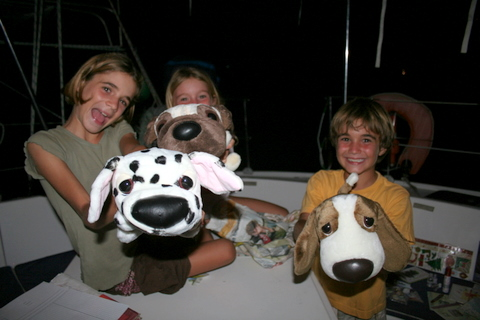 Merci Alexia ! La saison des cyclones touche à sa fin et la plupart des bateaux s'en vont, qui pour les Gambiers, qui pour Papeete, qui pour les Tuamotus, qui pour la baie d'à côté. Avant de lever l'ancre, on s'est tous retrouvé sur le quai pour un ultime barbecue, bien arrosé comme il se doit.
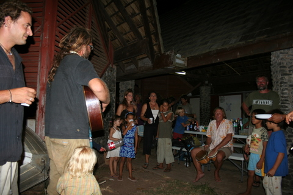 Fin de séjour. On a bien rigolé mais, maintenant, l'heure est aux préparatifs. On a réparé l'anémomètre, vidangé les moteurs, réparé les capots, vérifié les niveaux des batteries, fait le plein de bananes, riz et farine, rangé le bateau et, à 14 heures, on a pris la direction sud-ouest, vers Kauehi. Tuamotus, on arrive !!! |
||||||||||||||||||||
|
23 Mars 2010 - Ua Huka - Plein de fruits Les Tuamotus, ce sont des atolls de sable fin, plantés de cocotiers, baignant dans de l'eau claire. Autant dire que pour la pêche, ça le fait. Mais pour les fruits, ça le fait pas. Faisant preuve d'une perspicacité qui tient presque de la voyance, nous anticipons la pénurie de bananes et autres pomelos. Cette perspective nous chagrine d'autant que nous nous sommes lâchement habitués à disposer de ces fruits à profusion, ici, aux Marquises. Aujourd'hui, nous sommes donc descendus à terre dans le but de faire le plein de fruits, si possible des agrumes qui se conservent longtemps, placés dans les filets à l'ombre des panneaux solaires.
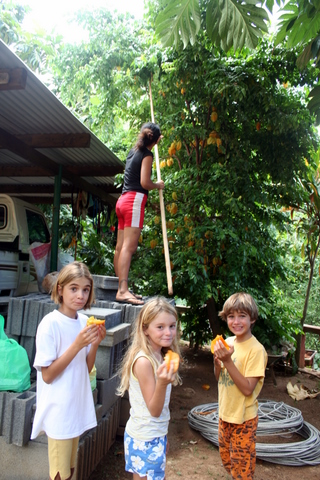 Les enfants adorent les caramboles. Après quelques heures de ballade dans Hane, nous avons rencontré beaucoup de locaux fort sympathiques et compatissants. Nous avons donc ramené suffisamment de fruits à bord pour ouvrir une épicerie.
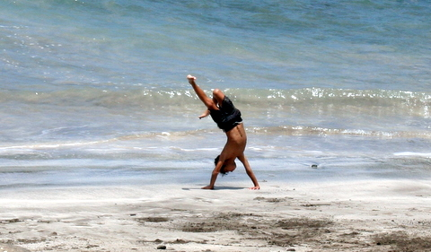 Pendant que Sidney fait le pitre à la plage, on ramène notre cueillette à bord. Au total, ce sont plus de 20 pomelos, 5 kg de citrons, des oranges, des mangues, des caramboles et des grenadines que nous avons engrangés. Il ne nous reste plus qu'à trouver un régime de bananes vertes à Nuku Hiva et nous pourrons partir affronter les rigueurs des Tuamotus l'esprit serein: le scorbut ne passera pas par nous.
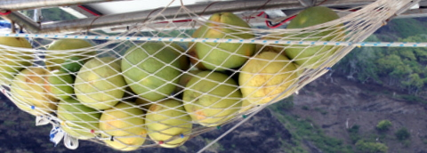 22 pomelos dans notre escarcelle. |
||||||||||||||||||||
|
21 Mars 2010 - Je suis content Nous avons quitté Atuona ce matin, dans l'espoir de faire une escale au nord de Hiva Oa, avant d'entamer la traversée (55 nautiques) jusqu'à Ua Huka, dernière île habitée des Marquises dont nous n'avons pas encore foulé le sol. A peine la voile levée, le vent s'est engouffré dedans, comme un navetteur dans une bouche de métro. La vitesse du bateau s'est stabilisée autour de 6 noeuds et une chose extraordinaire est arrivée: la ligne de traîne bâbord s'est mise à frétiller.
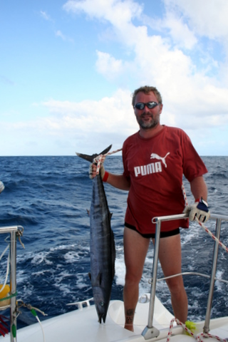 J'ai pêché un thasard, j'ai pêché un thasard, la la la .... Dès que j'ai vu se tendre l'élastique, j'ai sauté sur la ligne et, m'arcboutant contre le portique, j'ai commencé la lutte sans merci contre la force mystérieuse qui s'était emparée de ma ligne. Contrairement à une idée reçue, on ne distingue que relativement tard le poisson qui a mordu. Au départ, on se base sur la force qu'il exerce sur la ligne pour se faire une idée. Cette fois, le poisson était bien ferré et après quelques minutes de traction, nous avons vu apparaître la silhouette du thasard, se débattant pour échapper un bouillabaisse certaine. Hélas pour lui, j'étais déterminé et je l'ai extrait de l'eau pour le propulser dans le cockpit, d'où il ne s'échapperait pas. Vue la taille de la bête, j'ai estimé que nous avions assez de poisson pour l'instant et j'ai décidé de lever la ligne de traîne tribord. A peine avais-je commencé à enrouler le fil que, paf, j'ai soudain senti une forte résistance. J'ai donc ramené un deuxième poisson à bord: une magnifique dorade coryphène qui, au prix d'un triple salto vrillé exécuté sous mes yeux ébahis, parvint à se défaire de l'hameçon et s'enfuir dans l'onde bleue.
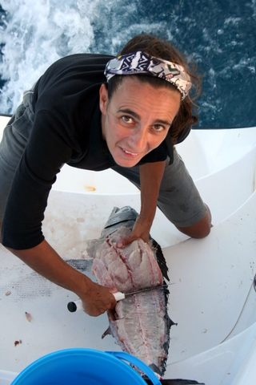 Cécile lève des filets sur la jupe alors que Let It Be vole à près de 8 noeuds de moyenne. Un peu plus tard, alors que nous voguions vers Ua Huka, ayant renoncé à notre mouillage au nord de Hiva Oa pour cause de houle intempestive, Cécile, d'ordinaire malade dans son mouchoir, trouva la force de vider le poisson et de lever des filets (et non l'inverse). Bref, on a presque 10 kg de filet de thasard et on est arrivé à Ua Huka à 21 heures, en pleine nuit, dans la baie de Hane. |
||||||||||||||||||||
|
19 Mars 2010 - Adieu Paul ! Adieu Jacques ! Parmi les hôtes célèbres qui foulèrent le sol des Marquises, il y a Paul Gauguin, peintre mort à Atuona en 1903 et Jacques Brel, rêveur enterré à Atuona en 1978.
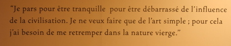 Gauguin nous donne une bonne raison de partir, toujours d'actualité. Au coeur d'Atuona, à l'emplacement exact de la maison du peintre, se situe un petit musée, illustrant la vie marquisienne de ces deux illustres artistes. Non seulement figurent ici quelques dizaines de reproductions des tableaux du maître mais on trouve aussi un parallèle intéressant entre la vie de Gauguin et l'histoire des Marquises.
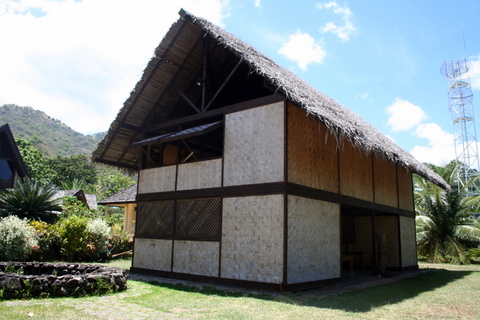 La maison du Jouir, où est mort Gauguin, reconstruite à l'identique près de 100 ans plus tard. Contigu à l'espace Gauguin, se trouve l'espace Jacques Brel. Dans un entrepôt de quelques centaines de m², on trouve Jojo, un bimoteur duquel se servait Brel pour aller et venir à Hiva Oa.
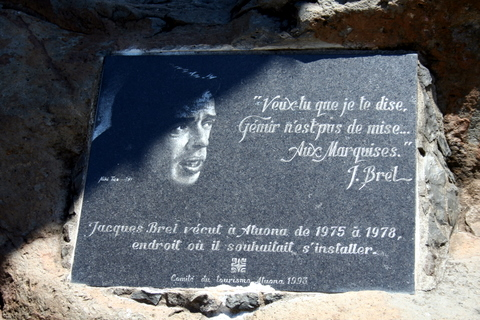 A l'entrée, cette stèle intrigante. 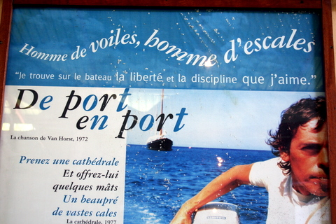 ... Dans l'enceinte, un haut-parleur caché diffuse les chansons de Brel, tandis qu'autour du bimoteur se trouvent une série de cadres, reprenant les plus belles paroles de l'artiste. Je dois avouer que la présence vocale de l'artiste et les paroles pleines de poésie de quelques unes de ses chansons nous ont parfois serré le coeur de manière inattendue.
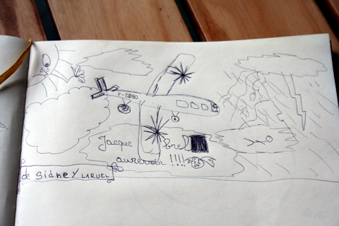 Sidney a fait un petit dessin dans le livre d'or de l'espace BREL. Enfin, un peu plus haut dans le village se trouve le cimetière, où l'on peut voir la tombe des deux hommes.
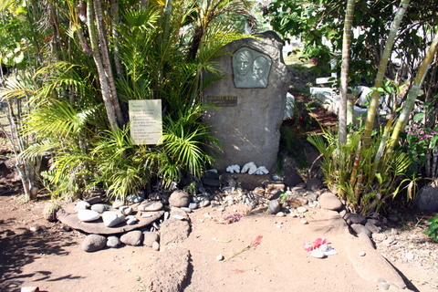 La tombe du grand Jacques, fleurie de galets bavards. Cécile dit toujours que j'ai un coeur de pierre et que rien ne m'émeut. La visite d'aujourd'hui a démontré que ce mythe n'était pas facile à maintenir...mais je pense avoir assuré. |
||||||||||||||||||||
|
17 Mars 2010 - Joyeux anniversaire, maman ! Lors de notre départ de Martinique (il y a presque 1 an), nous avions emporté un trampoline à mailles fines et sans noeuds, destiné à remplacer le trampoline précédent qui nous écorchait les pieds. Nous avions éprouvé pas mal de difficultés à le recevoir et, au final, celui que nous avions reçu semblait mal dimensionné.
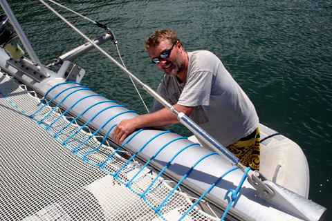 Je commence par tendre le filet à l'aide de deux cordages enroulés sur la poutre. Lors de notre passage à Panama, nous avions profité de notre présence dans une marina pour installer le nouveau trampoline, tant bien que mal. Nous l'avions tendu jusqu'à ce que les côtés touchent les coques mais, nonobstant, on s'enfonçait encore assez nettement lorsqu'on marchait dessus. Depuis lors, une de mes activités récurrentes à bord, outre la réparation du déssal et le nettoyage des coques, consistait à réparer les fixations du trampoline, qui s'usaient par ragage (frottement) contre le rebord du bateau. Grâce à une analyse extrêmement poussée et une réflexion hégelienne, je suis parvenu à la conclusion que cette usure excessive était due à un filet trop mollement tendu, dans lequel on s'enfonçait trop profondément. Devant un parterre de spectateurs enthousiastes, j'énonçai ces conclusions et ma certitude de ne rien pouvoir y changer puisque: "Ce putain de trampoline est tendu à fond, les ballons".
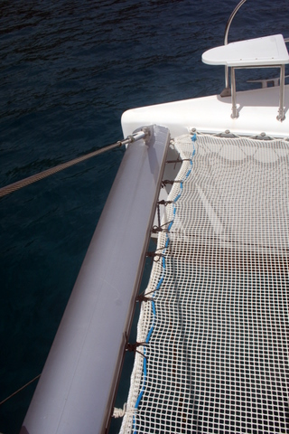 Je serre les petits bouts qui fixent le trampo à la poutre. On voit le bout bleu 'brodé'. C'est alors que surgit dans ma cervelle surchauffée par une trop longue exposition au soleil, une idée réellement innovante, pour son temps: certes, le filet est tendu au maximum mais en l'utilisant dans son intégralité. Pourquoi dès lors ne pas raccourcir le filet à l'aide d'un cordage, que l'on 'broderait' à l'avant du trampoline et qui servirait d'amarrage ? Hein, pourquoi ? Aussitôt dit, pas aussitôt fait car après avoir brodé le cordage d'amarrage et commencé à tendre le filet à l'aide de deux cordages entourés sur la poutre de proue, j'ai constaté que mes mains étaient raccrapotées, comme des bananes au soleil. En plus, à force de tirer sur les bouts, j'avais les doigts engourdis et un peu raides.
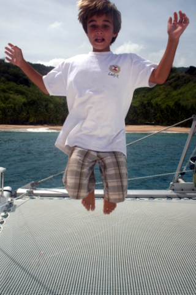 Sidney teste la rebondicité du trampo. Il m'a donc fallu quelques jours pour tendre les grands cordages, puis attacher les 26 petits bouts, puis retendre les cordages, puis retendre les bouts, etc., jusqu'à ce que le trampoline soit bien tendu. Au final, j'ai réduit la largeur de quelques 15cm et les enfants sont très heureux de pouvoir sauter sur le trampo. Merci Manuia pour l'inspiration ! |
||||||||||||||||||||
|
14 Mars 2010 - Hiva Oa - Mara'e. Où sont passé les Marquisiens ? Et comment vivaient-ils ? Et préfèreraient-ils manger leurs ennemis avec du poivre ou plutôt avec une sauce aigre douce ? Voilà autant de questions que se posent les archéologues depuis de nombreuses générations. Intrigués par une telle opiniâtreté scientifique, nous avons voulu, nous aussi, nous faire une idée en allant visiter un mara'e. Mais qu'est-ce qu'un mara'e me demanderez-vous ?
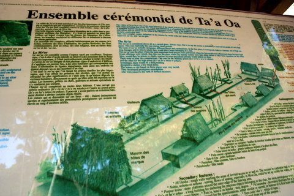 Plan du mara'e de Taa'Oa. Un mara'e est un ancien village marquisien, on y trouve un tohua, des tiki et, surtout, des pae pae. Incroyable, non ? Trèves de plaisanteries, il convient d'abord de préciser que les Marquisiens construisaient leur maison en bois, reposant sur une plateforme constituée de pierres volcaniques disposées de manière à faire un socle (les fondations de la maison, en un mot). Evidemment, le bois a disparu depuis longtemps, si bien que ne restent visibles que les plateformes rocheuses, appelées pae pae.
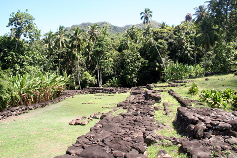 Le tohua, c'est à dire la place centrale. Adossé au village, se trouvait le tohua, esplanade destinées aux rites religieux, aux danses et cérémonies en tous genres (y compris sacrifices humains).
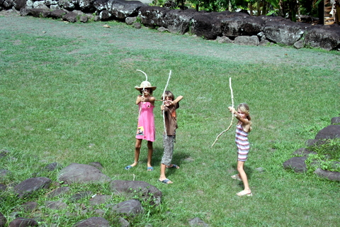 Les enfants imprégnés du mana du lieu, se transforment en guerriers sauvages. Les tiki sont des représentations des dieux, généralement sculptées sur bois mais, dans les villages, il en existaient de plus pérennes, taillés dans la pierre. Bref, ne subsistent du site que les fondations des temples, maisons, ateliers, entrepôts, etc dans un espace reconquis partiellement par une nature vigoureuse, ce qui donne à ces lieux abandonnés depuis plus de 100 ans une atmosphère unique, réellement frissonnante. |
||||||||||||||||||||
|
10 Mars 2010 - Tahuata - DC132. Eeeeh, mon ami ? T'aimes ça, toi, les patates ?
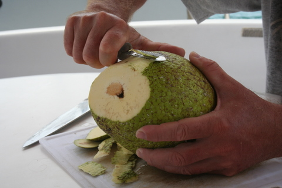 On pèle le Uru. Ben oui, j'aime ça moi, les patates. Les patates rissolées, les patates purée, les patates au four et, évidemment, les frites une fois. Malheureusement, aux Marquises, de patates, point. Par contre, des urus, il y en a à foison. Donc, on fait des frites de uru. Comment procède-t-on ? C'est simple. Premièrement, on trouve un uru bien mûr. Pour cela, pas de problème: on se promène dans la nature et on repère un de ces fruits, perché sur un arbre. On demande au propriétaire si l'on peut le cueillir et, généralement, on peut. Encore faut-il y arriver car le urutier est un arbre démesurément grand. En général, on utilise une grande perche ou on joue au singe acrobate.
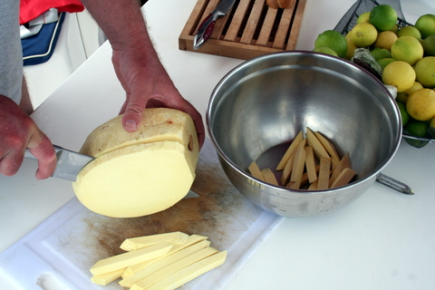 On découpe le Uru en frites. On ramène le uru au bateau et on le pèle. On le coupe ensuite en frites.
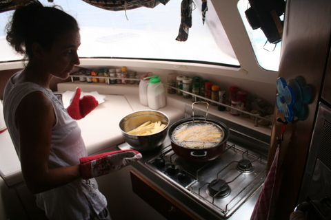 On frit le uru (d'où le nom de frites). On jette les morceaux de uru dans de l'huile bouillante, on attend, on retire, on replonge, on re-attend et on laisse goutter. On sale. On mange. C'est délicieux. Enfin, pour être honnête, ça vaut quand même pas les bintjes mais, comme disait Lafontaine, faute de grives on mange des merles.
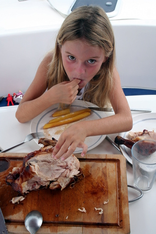 Poulet&frites, que demander d'autre ?. |
||||||||||||||||||||
|
9 Mars 2010 - Tahuata - Faune. Durant la traversée, nous avons comme d'habitude pêché broquette. Mais nos leurres ont bien fonctionné car pendant près de 10 minutes, un oiseau a tourné autour du bateau, en faisant de réguliers plongeons en direction de nos lignes de traîne, à quelques 50 m du bateau. Fort heureusement, il n'a pas réussi à s'emparer du poulpe multicolore en plastique qui masque le hameçon de bout de ligne.
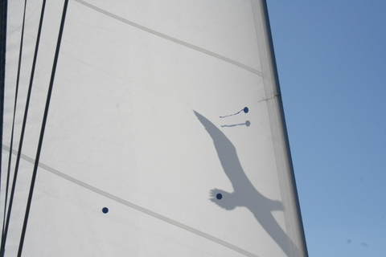 Aucun proverbe ne dit: "Oiseau dans la voile, poisson dans la toile". Arrivés à Tahuata, nous avons été agréablement surpris de découvrir des eaux bleues et limpides. Nous avons jeté l'ancre et passé une excellente nuit. Dès le matin, nous avions rendez-vous avec Manuia dans la baie d'à côté, aussi avais-je décidé d'embrocher quelques poissons afin de ne pas venir les mains vides. J'ai enfilé palmes, masque et tuba, j'ai saisi mon harpon et j'ai sauté dans le dinghy pour aller pêcher. Par un inexplicable concours de circonstances, je n'ai pas réussi à harponner le moindre poisson et, de surcroit, j'ai coincé l'ancre par 10m de fond. Après quelques tentatives infructueuses pour la dégager, il m'a bien fallu me rendre à l'évidence: mon ancre était perdue. Je suis rentré tout penaud au bateau et nous sommes partis à la rencontre de Dédé et Marianne. Lui faisant part de mon malheur, je pris grand soin de flatter son ego d'apnéiste mayolesque. Il me prit en pitié et me proposa de m'aider à décrocher l'ancre. Nous sommes donc retournés sur les lieux du forfait et Dédé, bien plus jeune que moi, et doté d'un équipement hi-tech, n'eut aucun mal à dégager l'ancre. Sur le chemin du retour, nous nous sommes arrêtés pour ramasser quelques oursins accrochés aux flancs du tombant.
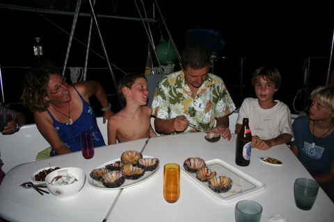 Les oursins, diversement appréciés. Le soir venu, ils ont mangé les oursins puis nous sommes partis à la chasse aux langoustes. Dédé en a fléchés deux, pendant que je me faisait brasser par la houle, incapable de discerner quoi que ce soit avec ma lampe sous-marine à faisceau concentré. Bref, une fois de plus, le matériel adéquat me faisant défaut, je n'ai pu contribuer à l'extinction de l'espèce. Dès le lendemain, nous avons eu le grand privilège de prendre notre petit déjeuner en compagnie d'un petite raie manta qui tournoyait autour du bateau, avec une grâce réellement fors du commun (et que ne rend pas bien la photo, d'ailleurs).
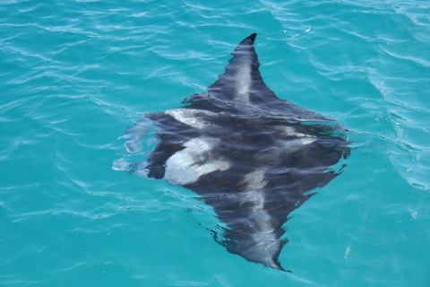 La raie manta. Au petit matin, Manuia a levé l'ancre en direction de Fatu Hiva puis des Tuamotus. Nous les reverrons peut-être au détour d'un atoll. Enfin, maintenant que Dédé est parti, je vais enfin pouvoir refaire le fier devant Cécile. |
||||||||||||||||||||
|
7 Mars 2010 - Fatu Hiva - Adieu. Le premier transpac de l'année 2010 est arrivé ce matin, jetant l'ancre juste à notre étrave.
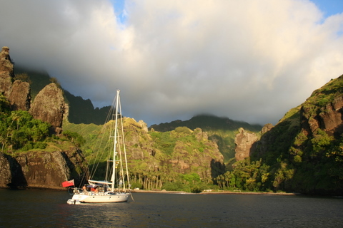 Dernier regard sur la baie des Vierges. Notre isolement rompu, le charme le fut également. Aussi, nous avons profité d'un dernier coucher de soleil sur Fatu Hiva pour faire nos adieux.
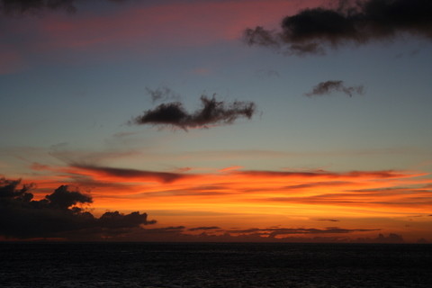 Dernier coucher de soleil sur Fatu Hiva. Nous avons levé les voiles et sommes partis, comme des cow-boys solitaires, vers Tahuata, île située à 40 nm au nord ouest de Fatu Hiva. |
||||||||||||||||||||
|
6 Mars 2010 - Fatu Hiva - Cascade de Hanavave. Je conçois que l'abus de cascades peut nuire à la santé mais je vous l'avoue: j'aime vivre dangereusement. Aussi n'ai-je pas hésité à emmener femme et enfants (d'abord) à la découverte de la chute d'eau d'Hanavave.
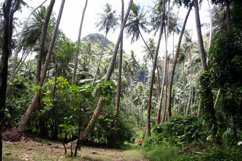 Départ de la ballade dans une forêt de cocotiers. Fatu Hiva est la seule île habitée des Marquises qui n'est pas déservie par avion (il n'y a pas de piste). Hanavave est une bourgade de 200 habitants qui compte en tout et pour tout une épicerie qui ouvre de temps en temps et où l'on ne trouve que des produits secs. Il n'y a pas d'autres magasins.
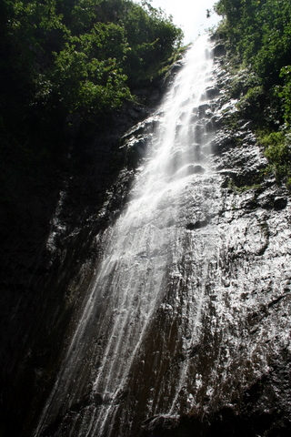 La chute d'eau. Le ravitaillement y est donc sommaire et les gens y vivent un peu en reclus. C'est bien simple, il n'y a que 10 pick-ups 4x4... C'est dire le degré d'isolement des insulaires. En outre, tous le monde est cousin. Parfois, au détour d'un manguier, on rencontre un homme descendant de la montagne avec son cheval, ramenant le coprah et, entamant la conversation, on se rend compte que c'est le père d'untel, que l'on a rencontré la veille et qui nous avait présenté son cousin, celui qui habite la maison à côté. Fort heureusement, pour improbables que soient ces rencontres, elles se soldent toujours par des échanges de propos sympathiques, même si, la maîtrise du français faisant défaut, les autochtones ne comprennent pas toujours ce que l'on dit ou ne peuvent pleinement s'exprimer. Et comme on ne maîtrise que superficiellement le marquisien...
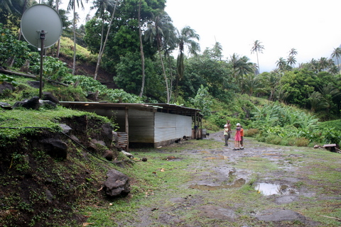 Une maison perdue dans la vallée, genre Southern Confort. Comme il se doit, le sentier qui mène à la cascade est à la fois tortueux et magnifique, serpentant dans la jungle fatuhivienne. Sous un ciel très bas et bien chargé, on déambule dans une vallée sauvage à l'atmosphère tiède et moite. Dans ces conditions, quand nous nous sommes approchés de cette masure à l'allure rustique, entourée d'une meute de chiens rachitiques mais bruyants, je ne pouvais m'empêcher de penser au film 'Délivrance', de John Boorman. Pour ceux qui ne l'ont pas vu, c'est l'histoire de citadins qui décident de faire du raft dans un coin perdu des USA et qui tombent sur des locaux un rien dégénérés. Le tout finit dans un bain de sang. Mais peu importe, il règne, tout au long du film, une ambiance vaguement inquiétante, genre : 'Les paysages sont trop beaux et les gens peu bavards, ça cache quelque chose'. Ici, heureusement, on n'a pas rencontré de dégénérés, on a trouvé la cascade, on est revenu avec des bananes, des pomelos, des citrons, des mangues et des papayes et on a une fois de plus profité des paysages de Fatu Hiva qui restera pour le coup notre premier choix aux Marquises quant à la beauté des lieux. Et le pied de Cécile ? Que devient-il dans tout cela ? Eh bien, je vous l'avais dit: Cécile se fiche de l'opinion des autres et vous devriez en faire autant. Voilà la solution. Merci Mr Morthez. C'est pourquoi, elle a fait la promenade avec son atèle. Unbelivebole.
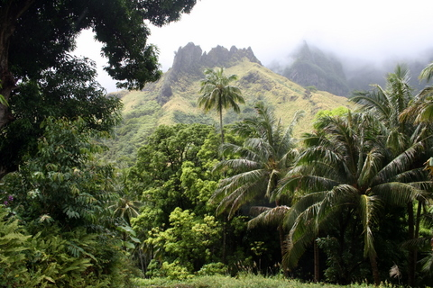 Belle île. |
||||||||||||||||||||
|
3 Mars 2010 - Fatu Hiva - Hanavave, la plus belle baie du monde. A quelques kilomètres au Nord de la baie d'Omoa se situe la baie d'Hanavave, connue également sous le nom de 'Baie des Vierges'. Cette baie, point d'arrivée aux Marquises de dizaines de bateaux au terme de la transpacifique, est tenue par certains comme le plus beau de tous les mouillages.
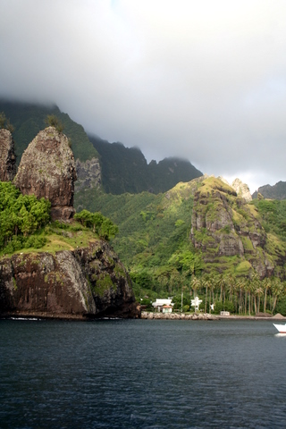 Côté Nord. 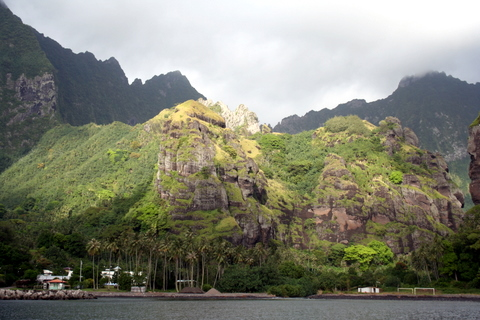 Côté Centre. 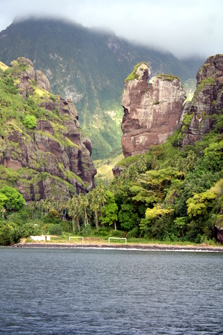 Côté Sud. Pour une fois, je vais me taire et me contenter de publier quelques photos. A vous de juger... |
||||||||||||||||||||
|
1 Mars 2010 - Fatu Hiva - Retour a Omoa. Ca faisait plus de 2 mois que nous n'avions plus fait de 'longue' navigation. Comme notre dernier colis n'arrivera à Nuku Hiva que dans 15 jours, nous avons décidé de retourner à Fatu Hiva (l'île de notre entrée aux Marquises) et de recommencer la visite des îles du Sud, que nous avions expédiée un peu vite en décembre.
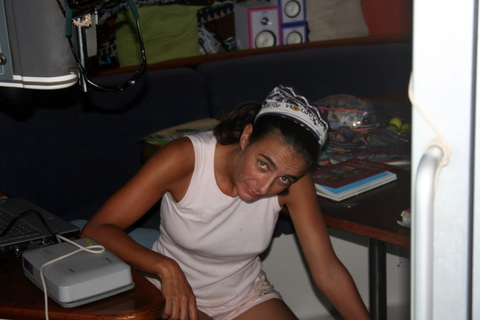 Cécile a perdu l'habitude de naviguer, pas celle d'être malade. On a levé l'ancre à 10 heures, le 28 février, pour une navigation de 135 nautiques, essentiellement au près, puisque, pour la première fois, nous retournons sur nos pas. Qui dit 'près', dit 'secoués'. De fait, il n'a pas fallu attendre longtemps pour que les maillons faibles de la famille soient victimes du syndrome JSMJVM ('Je suis malade, je vais mourir').
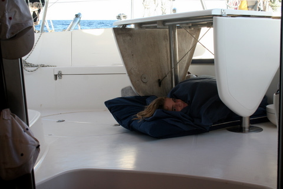 Kenya dort sous la table du cockpit. Alors que nous filions Sud-Est sur une mer relativement calme (houle de 2m environ), Kenya se sentit trop faible pour gagner sa cabine pour la nuit. Elle a donc dormi sous la table du cockpit, aérée par les alizés. Finalement, plus de peur que de mal puisque, ni Cécile, ni Kenya, n'ont eu à subir l'infamie de renvoyer le plat de la veille, bien que Kenya s'y fut préparée à l'aide de son saladier favori.
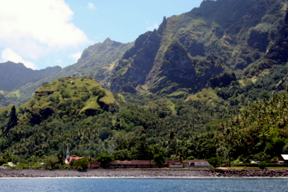 Omoa. Décidément bien sympathique petit village. Après 23 heures de navigation, nous sommes arrivés à Omoa, non sans avoir explosé notre ligne de traîne bâbord, sans doute arrachée par un thon mécontent. Nous allons maintenant pouvoir reprendre la visite des îles du Sud, avant de re-rejoindre Nuku Hiva, sa poste et ses colis pour la fin du mois de mars. |
||||||||||||||||||||
|
27 février 2010 - Nuku Hiva - Réveil matinal. Cette nuit, un tremblement de terre de magnitude 8.8 sur l'échelle de Richter s'est produit au large de Conception, au Chili. Bien que distant de plus de 6000 km des Marquises, l'épicentre du phénomène se trouvant dans le Pacifique, il pouvait engendrer un tsunami dévastateur. Nous avons donc été réveillés à 3h45 ce matin, avec ordre d'évacuer la baie, comme tous les bateaux au mouillage. Nous nous sommes éxécutés et vers 7 heures du matin, la vague arrivait, imperceptible hélas, perdue dans le flot des vagues de houle. Quel dommage ! Deux tsunamis et toujours pas de vagues...
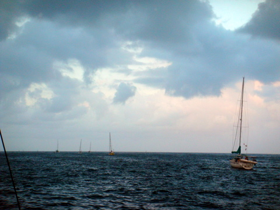 Les bateaux quittent la baie à la queue-leu-leu. Il est vrai que nous étions supposés nous rendre en mer précisément pour ne pas subir l'effet du tsunami. A cet égard, le plan a parfaitement fonctionné. |
||||||||||||||||||||
|
27 février 2010 - Nuku Hiva - Quelques infos sans importance. Depuis qu'on est arrivé aux Marquises, je souffre d'une affection chronique: la calorite, ou l'excès de chaleur. Du matin au soir, j'ai trop chaud. J'imagine que ce genre d'affirmation peut en choquer quelques uns (et surtout quelques unes) mais je suis bouilli, étuvé, poché, en un mot: cuit. Force m'est d'admettre que je ne me fais point aux températures tropicales. Aussi, après tractations avec Cécile, j'ai obtenu l'autorisation de couper cette chevelure qui faisait ma réputation dans le monde entier et que me jalousaient tous les lecteurs nordiques, descendants des vikings.
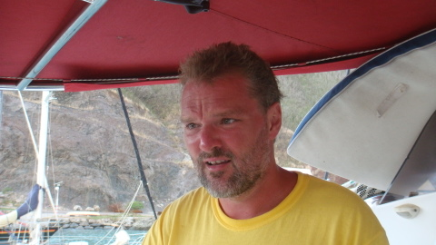 Nouvelle coupe mais toujours la même tronche. Cécile a empoigné la paire de ciseaux d'une main et la tondeuse de l'autre, m'a demandé de m'asseoir sur la jupe arrière et m'a fait cette coupe magnifique, que bien des jolis coeurs m'envient. Depuis lors, la température n'a pas baissé d'un degré aux Marquises mais, curieusement, j'ai l'impression d'être moins oppressé.
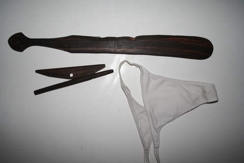 Mes modestes réalisations (la raclette est séparée en deux parties). Par ailleurs, je me suis rendu compte que j'avais vanté mes mérites de jeune sculpteur sans en donner la preuve en image (même si l'image ne constitue pas la preuve, n'est-ce pas Roger ?). J'ai donc joint une photo de la raclette et de la palette à crèpes. Je me rends compte hélas que ces photos ne rendent pas du tout les gravures qui ornent ces objets.
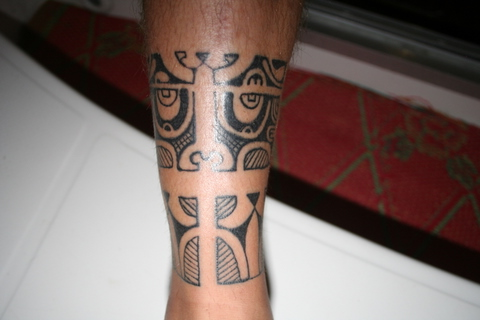 Mon tatouage de cheville, vu de face. Je profite aussi de l'occasion pour faire un gros plan de la face avant de mon tatoo et pour confirmer que nous avons bien reçu ce mardi le colis envoyé fin octobre pour la St Nicolas des enfants... Comme quoi, il ne faut pas désespérer. Au rayon des pannes invraisemblables, nous venons de casser notre deuxième courroie d'alternateur, ce qui est pourtant stochastiquement impossible. Mais, par une chance tout aussi invraisemblable, la seule courroie présente en stock à la pompe à essence convenait parfaitement à notre moteur. Bizarre, bizarre. |
||||||||||||||||||||
|
20 février 2010 - Tant va la cruche à l'eau... Il y a un chemin forestier qui traverse l'île de Ua Pou d'Est en Ouest et qui porte le nom étrange de traversière. Après avoir un peu tergiversé, tant l'entreprise semblait insensée, nous nous sommes finalement lancés ce matin, dès 6 heures, à l'assaut de cette randonnée mythique.
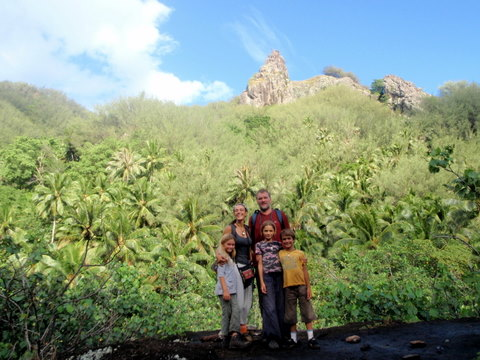 La traversière nous propose des paysages étonnants. Le chemin serpente dans la montagne et nous fait traverser des forêts denses, entrecoupées de ruisseaux que l'on franchit à gué, en sautant d'une pierre sur l'autre. Parfois, la pente est si forte que des âmes charitables ont placé quelques cordes pourvues de noeuds afin de faciliter la progression.
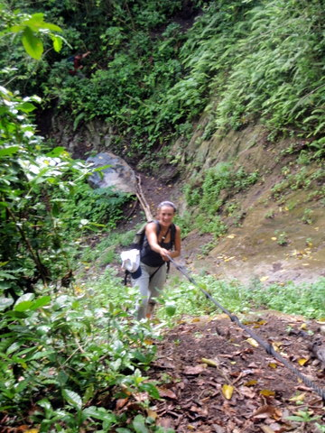 Cécile s'aide des cordes pour gravir une pente abrupte. Partis à 6 heures 30, nous sommes arrivés de l'autre côté de l'île vers 10 heures, juste à temps pour nous baigner dans une cascade rafraîchissante, objet de tous nos désirs depuis le départ. Grâce à cette carotte, on a même réussi à faire marcher les enfants, ce qui ne fut pas toujours facile, Cécile usant de stratagèmes divers pour motiver Sidney et Syr Daria qui, manifestement, préfèrent marcher en voiture qu'à pieds. Les esprits chagrin feront observer que 3 heures trente de marche, c'est quand même pas un exploit. Moi je rétorque que 210 minutes d'efforts par 32°C et 85% d'humidité, ça mérite une petite bière !
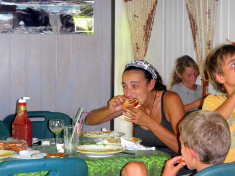 Après la rando, Cécile avale un cheeseburger. Et, justement, la carotte des parents était le lieu dit "Chez Pierrot", auberge réputée pour ses cheeseburgers. J'apprécie avec acuité la stupeur qui se dessine sur vos visages à la lecture de ces lignes mais je confirme: arrivés chez Pierrot, non seulement on s'est enfilé deux bières et un petit muscadet mais nous avons également ingurgité avec goinfrerie les restes des cheeseburgers laissés par les enfants. Evidemment, nous avions également commandé un petit repas pour les adultes: des gambas en entrée et un tournedos sauce champignons pour la suite. Résultat des courses, nous étions ballonnés en sortant du resto.
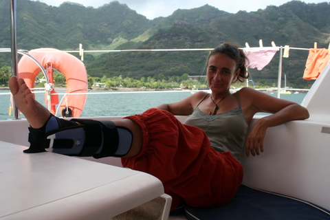 Finies, les randos. Au moins pour 3 semaines. Le lendemain, nous quittions Ua Pou pour revenir à Nuku Hiva, chercher les colis envoyés de Belgique le mois passé. Dans la précipitation du départ et suite à l'orgie d'hier, Cécile a trébuché sur un gros bout et s'est vautrée dans le cockpit en émettant un cri strident (genre "Retour des morts vivants"). Dès notre arrivée à Nuku Hiva, 5 heures plus tard, on s'est directement rendus à l'hopital et Cécile s'est retrouvée avec une superbe atèle. Verdict du médecin: petite entorse. Mais ça fera quand même 2 à 3 semaines d'immobilisation pour ma petite vahiné (et, à l'heure où j'écris ces lignes, je constate avec effroi mais sans surprise, que Cécile n'a pas l'intention de se conformer à l'avis du médecin, que je supporte pourtant pleinement: elle court dans tous les sens sur le bateau. Enfin, quand je dis: "Elle court", je veux dire: "Elle clopine".) |
||||||||||||||||||||
|
19 février 2010 - Le métier rentre Tous les jours, je suis chassé du bateau dès l'aube et ne peux le rejoindre que vers midi, heure à laquelle je commence à préparer le repas. Comme il ne me faut guère de temps pour faire les courses et que les eaux troubles des Marquises ne permettent pas souvent la pêche au harpon, j'ai souvent une paire d'heures à tuer durant la matinée.
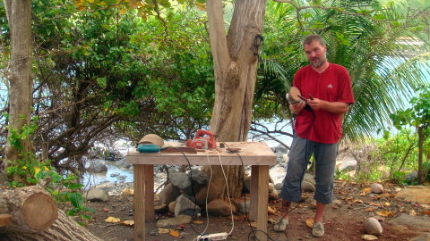 Ponçage final du manche de la raclette à crêpes. Souvent, je profite de cette occasion pour réparer des petits trucs sur le bateau ou pour ennuyer Cécile qui donne la classe. Mais, ayant abusé de ces options dernièrement, le bateau est nickel et Cécile peu enthousiaste à l'idée de me savoir à bord. Heureusement, j'ai trouvé quelqu'un qui me comprend en la personne d'Ismaël, artiste créateur de son état, que je visite chaque jour et qui m'enseigne les rudiments de la sculpture sur bois.
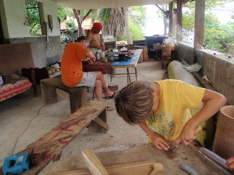 Tel père, tel fils Sidney étant largement en avance sur son programme scolaire, il jouit lui aussi d'un visa de sortie pour visiter du pays pendant que ses soeurs s'échinent sur des problèmes de maths insolubles. Nous allons donc à deux chez Ismaël. Sidney a décidé de fabriquer des écriteaux en bois personnalisés pour chacune des cabines du bateau tandis que moi, après avoir réalisé une râpe à coco en bois de fer, je me suis lancé dans la fabrication d'une palette à retourner les crêpes ainsi que d'une petite raclette permettant d'étaler la pâte à crêpes sur la galetière. Même si le résultat n'est pas à la hauteur des réalisations de notre maître, je suis assez fier de mon oeuvre, que je ramènerai avec nostalgie de mon passage aux Marquises.
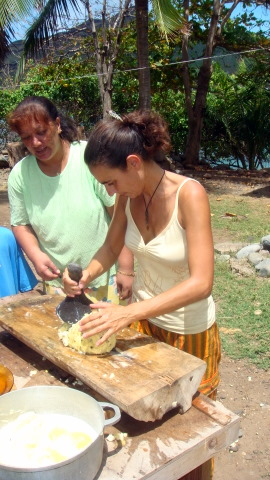 Cécile fait du Kakoï. Cécile, quant à elle, continue son petit tour d'horizon des spécialités culinaires de Polynésie. Cette fois, c'est Agnès qui lui a appris à faire le Kakou: on prend un Uru, on le fait cuire 1/4 d'heure dans le feu, on le pèle et on en fait de la purée au moyen d'un gros pilon en pierre. On arrose le tout de lait de coco et on mange: ça a vaguement le goût de la châtaigne et ça accompagne très bien le ragout de chèvre ou le filet de porc au coco. |
||||||||||||||||||||
|
18 février 2010 - Premières à Ua Pou Depuis qu'on est arrivé à Hakahau, nous croisons régulièrement des gamins qui pêchent le long du quai.
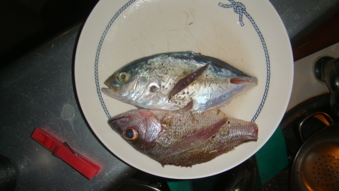 Les premiers poissons pêchés par Sidney. Sidney a lié connaissance et a décidé de se (re)lancer dans une carrière de pêcheur à la ligne. Cette fois-ci, apparemment, les choses semblent mieux se présenter que lors des précédentes tentatives puisque Sidney nous a ramené deux poissons à bord, pêchés de ses blanches mains.
Et, fin du fin, non seulement il a ramené sa mini carangue et sa mini dorade mais il les a mangées ! Depuis, dès l'école terminée, Sidney retrouve ses potes sur le quai et ils pêchent à qui mieux mieux. |
||||||||||||||||||||
|
16 février 2010 - Racines Parfois, au détour d'un chemin, Cécile tombe en amour devant un arbre, un rocher ou un torrent ou devant mon corps musclé de jeune footballeur batave, mais c'est plus rare. Aujourd'hui, elle était pamée devant une racine noueuse qui n'était pas sans rappeler la danse du crotale.
Je me suis dit que l'occasion était belle d'immortaliser cet instant et de vous faire partager, autant que faire se peut, l'intense émotion de ma douce quand elle se pâme.
Comme on marchait dans la forêt, il était assez facile de prendre ces clichés qui, à défaut de me valoir un prix, sont au moins un témoignage de mes investigations scientifiques de botaniste amateur. J'ai donc photographié sans compter, conscient de ma contribution, certes infinitésimale, à l'édifice techno-scientifique moderne. Voici donc un petit florilège de racines diverses, dont je vous passe les caractéristiques nutritives, afin de vous épargner d'insipides considérations.
Les racines de l'Aito sont noueuses et serpentent avant de s'enfoncer dans le sol. Le Pandanus possède, à la base du tronc, des rejets qui pointent en direction du sol et y plongent en formant une mini-pyramide. Les cocos germent puis forment un mini cocotier, rien qu'en exploitant les ressources de la noix de départ. Mais il y a un arbre qui surclasse tous les autres en terme de racines: le Banyan. Cet arbre est tellement impressionnant et majestueux qu'il est sacré pour de nombreuses peuplades primitives du Pacifique et de l'Asie du Sud-Est, comme les Ouallons, par exemple.
|
||||||||||||||||||||
|
13 février 2010 - Four marquisien Qu'y a-t-il de plus enivrant que la découverte quasi ethnologique de pratiques ancestrales au charme désuet (à part la bière et le Komo, naturellement) ? Rien, à part la bière et le Komo, évidemment. Cette année, les Marquisiens avaient décidé d'organiser un grand hima pour célébrer mon anniversaire. Le hima, aussi appelé four marquisien, est aux Marquisiens ce que la raclette est aux Savoyards ou la choucroute aux Alsaciens: une recette séculaire que l'on se transmet de mère en fille au cours d'orgies où la gent masculine beugle et finit invariablement dans le vomi. En fait, le hima tient plus du méchoui des Kabyles, mais la comparaison ne tenait pas pour des raisons de liquide fermenté.
Pour organiser une repas festif capable de rassasier un grand nombre de Marquisiens (ce qui, en soi, est déjà un exploit), la technique du hima a fait ses preuves: on creuse un grand trou rectangulaire, on y place quelques bûches et on y boute le feu dès la fine pointe de l'aube. Après quelques heures de combustion, on obtient un lit de braises que l'on couvre de pierres volcaniques (ce dernier point est important parce que, si on met des galets, par exemple, ils explosent sous l'effet de la chaleur).
Lorsque les pierres sont incandescentes et que les flammes se sont tues, on place sur les pierres une cage métallique grillagée dans laquelle on a placé des tas de petits sacs faits en feuilles de cocotiers tressées. Chacun de ces sacs contient des morceaux de viande épicés. Généralement, on utilise du porc et de la chèvre. Mais il est également possible d'y placer du boeuf, du cheval, du poulpe, du poisson, du kangourou ou du chevreuil (bien que ces derniers soient plus difficiles à trouver dans les îles). On complète la cage par 2 ou 3 régimes de bananes et on la recouvre de feuilles de bananiers. Ensuite on alterne: une couche de plastique sous forme d'une bâche, une couche de terre et l'on termine par une dernière couche de plastique, destinée à assurer l'imperméabilité du four, au cas improbable où il pleuverait pendant les 7 heures que dure la cuisson et pour qu'en fin de journée, l'on puisse retrouver le four enfoui sous la terre.
Or donc, 7 heures plus tard, on déterre le trésor et on extrait la cage de sa prison de feuilles de bananier. Les aliments présents dans les paniers tressés sont cuits à l'étuvé et prêts à être consommés. Généralement, le travail des hommes s'arrête ici (et c'est prudent vu qu'à 19h, les effets de l'absorption continue de bière commencent à se faire sentir chez certains). Les femmes, qui les ont préparés dès le petit matin, se chargent d'ouvrir les paniers et d'en servir le contenu aux convives. Au final, cette technique permet de préparer un repas pour une centaine de personnes, chacune pouvant se délecter des morceaux de viande délicieusement parfumés par l'infusion de feuilles de bananier. |
||||||||||||||||||||
|
11 février 2010 - Arrière-pays Ua Pouesque Ua Pou est une île fort agréable, tant pour ses habitants d'une grande gentilesse que pour ses forêts et ses pitons basaltiques qui agrémentent nos randonnées. Voici un petit aperçu des paysages que l'on rencontre dans cette petite île au relief saisissant.
Durant l'une de ces promenades, on est parti pour 15 km de ballade afin de nous rendre chez Robert, qui habite dans la vallée d'à côté. Son activité principale est l'élevage caprin.
Nous avons marché quelques heures, mangé un bon Kaï Kaï (c'est comme ça qu'on dit barbecue en marquisien), puis nous sommes revenus au bateau.
Dans un autre registre, nous avons également assisté à l'apontage de l'Aranui, qui est le carbot (contraction de cargo et paquebot) qui visite l'île toutes les 2 semaines.
A la grande joie des enfants, nous avons bénéficié d'une visite guidée de la partie paquebot du bateau, pendant que les manutentionnaires chargeaient et déchargeaient la partie cargo. |
||||||||||||||||||||
|
10 février 2010 - Anniversaire anticipé Comme les Manuia doivent rentrer sur Nuku Hiva pour aller récupérer des visiteurs, nous avons décidé de fêter mon anniversaire avec 2 jours d'avance. Nous avons donc organisé un BBQ à la plage pendant l'après-midi, comme d'habitude, avant de nous retrouver sur Let It Be pour une soirée festive.
C'est donc assez bien entamés que nous avons décidé de boire quelques rhums, de manger un excellent foie gras artisanal en provenance directe du Gers, d'allumer un bon Havane et de faire du bruit pour tout le port. Nos amis Dédé et Marianne nous ont même gratifiés d'un rock d'enfer sur le pont.
Fort heureusement, nos nouveaux voisins de mouillage sont de vieilles connaissances de Nuku Hiva (leur bateau s'appelle Nefertiti). Ils se sont un peu fait attendre mais, finalement, ils nous ont rejoints avec quelques instruments, ce qui nous a permis d'improviser une jam session jusqu'à ce que la source de vin se tarisse. Après, je ne me rappelle plus de ce qui s'est passé mais on s'est réveillé entier ET dans le bateau, signe indubitable que tout s'est bien terminé.
|
||||||||||||||||||||
|
8 février 2010 - Tatoo, part II Après Cécile, c'était aujourd'hui à mon tour de passer dans les mains expertes de Jérôme. D'emblée, je tiens à rectifier une idée reçue parmi de nombreux incultes: le tatouage, c'est pas pour les chochottes. Trompé par la grande maîtrise de Cécile, je me suis rendu plein de confiance dans ce traquenard et j'ai mis ma cheville droite à la disposition de ce sadique qui m'a torturé pendant près de 3 heures.
Il m'est assez difficile de dépeindre les sentiments que l'on éprouve lorsque l'aiguille pénètre 1000 fois par minute dans la peau mais, en gros, on a l'impression de se faire découper façon kebab: tranchette par tranchette. Parfois, quand l'aiguille traverse des zones où la peau recouvre l'os (genre tibia, par exemple), on a l'impression de se faire vriller les nerfs. C'est assez stupéfiant et, n'était ma parfaite maîtrise de la douleur, j'aurais probablement craqué comme un enfant (et, à mon avis, Cécile était droguée car je ne m'explique point autrement sa capacité à continuer à discuter pendant qu'on la charcutait alors que moi, j'ouvrais la bouche sans émettre un son, un peu comme un poisson sorti de son bocal).
Crévindjou, comme on dit chez nous: ça fait biche. Mais bon, le jeu en valait bien la chandelle: je suis maintenant un vrai guerrier et, lorsque je me promène dans les rues, les regards admiratifs des Marquisiens me suivent avec envie. Il faut dire qu'en plus, j'ai opté pour des motifs dans le plus pur style des Marquises, ne faisant aucune concession à la modernité.
Comme nous sommes devenus inséparables, Dédé et Marianne se sont aussi fait tatouer, ce qui nous a valu des moments de grande poésie. |
||||||||||||||||||||
|
6 février 2010 - Tatoo Depuis notre arrivée aux Marquises, nous cherchions un homme habile et responsable, possédant en outre une réelle aptitude aux arts dessinatoires. Nous avions entendu parler d'un ermite, habitant sur les hauteurs d'Hakau, et capable, selon la légende, des plus grands exploits.
Jérôme, l'ermite en question, n'est autre qu'un ancien militaire, possédant une pension surplombant le port, et pratiquant le tatouage à ses heures perdues. Nous nous sommes rendu chez lui et Cécile lui a indiqué son souhait de disposer d'un tatoo sur la cheville, combinant les motifs Marquisiens et un 'Tiki' dessiné sur papier par Valérie aux Gambier.
Malgré le manque d'orthodoxie du projet (un 'tiki' tahitien au sein d'un tatouage marquisien !), Jérôme s'est mis à l'ouvrage, sans empressement mais avec beaucoup de maîtrise. Cécile semblait elle aussi faire preuve de beaucoup de maîtrise pour dominer sa douleur, à moins que, comme je l'ai toujours pensé, le tatouage, c'est pour les gonzesses.
Après une heure et demie, Jérôme a fini son travail. Cécile a été très courageuse et est maintenant ornée d'un très joli tatoo Marquisien, dont la symbolique profonde n'est pas sans rappeler les mythes ancestraux du peuple Polynésien. |
||||||||||||||||||||
|
5 février 2010 - BBQ à Hakau La saison des cyclones commence en Polynésie. Le premier est passé bien au Sud, imperceptible des Marquises. Mais, nous avons quand même décidé de trouver refuge dans une baie protégée par une digue et de nous amarrer à terre, au cas où une dépression tropicale aurait la mauvaise idée de nous rendre visite.
Après avoir jeté l'ancre et amarré le bateau au quai par l'arrière au moyen de deux longues aussières, nous étions en sécurité. Il fallait donc maintenant s'occuper du tazard. C'est bien beau de pêcher un poisson de 30 kg, mais encore faut-il le manger. Même à deux bateaux, cela fait beaucoup de poisson. Dédé, le capitaine de Manuia (et auteur de la pêche miraculeuse), suggéra alors un plan machiavélique, dont la créativité n'avait d'égale que la simplicité. Pourquoi ne pas en appeler à la population locale et organiser un petit barbecue sur la plage (en plus, à Hakau, il y a des BBQ publics à disposition, avec robinets d'eau et tables. Le grand luxe.)
Aussitôt dit, aussitôt fait. Le temps de faire un petit tour dans le village et nous avions rencontré deux ou trois candidats à la ripaille. Les Marquisiens n'étant pas du genre à venir les mains vides, ils nous ont même confié quelques langoustes, que nous avons fait griller, la bave aux lèvres.
Une des particularités des Polynésiens (je crois l'avoir déjà dit) est leur aptitude à manger pendant plus de 4 heures. Malgré un entrainement intensif, nous ne pouvons pas encore prétendre les suivre tout au long de ce périlleux exercice. Aussi, pendant que nos amis locaux se sustentaient, nous devisions gaiement, échangeant des propos sur le mauvais temps de cette année (probablement dû à El Niño) et sur le coût exorbitant des bières en Polynésie (près de 3€ la cannette). Bref, que du bon. |
||||||||||||||||||||
|
4 février 2010 - On retourne à Ua Pou Après quelques semaines passées à Nuku Hiva, il nous tardait de retourner à Ua Pou et ses colonnes basaltiques de 600m de haut. Pour ce périple, nous avions décidé de voyager en flottille, avec nos amis de Manuia (les bretons), à la grande joie des enfants.
Dès 8 heures du matin, nous avons levé l'ancre, bien décidés à montrer à nos amis bretons qu'en voile, les belges n'ont rien à leur envier. Voguant sur bateau au tonnage largement supérieur au leur, je ne doutais guère de notre avantage sous voile et je les ai donc laissé partir avec 30 minutes d'avance, pour une nav de 30 nautiques, soit 5 heures environ. Et bien, ce fut le lièvre et la tortue. Non seulement je ne les ai jamais rattrapés mais, en totale contradiction avec les lois de la bienséance et de la physique, ils m'ont mis une demie heure de plus dans le loch. La honte totale... De plus, une fois arrivés à Ua Pou, dans une baie soigneusement sélectionnée pour la qualité de son abri, nous avons rapidement déchanté: nous étions protégés du vent d'est mais pas de la houle qui, curieusement, venait de l'ouest.
Nous avons donc assisté avec stupeur au spectacle du fracas de la houle sur les rochers, pendant que le cata roulait de gauche à droite. Pendant ce temps, nous écoutions la radio et suivions avec attention la progression du cyclone Olie qui traversait la Polynésie (mais à plus de 1000 km au sud des Marquises). Après une nuit de roulage, nous étions bien décidés à nous rendre à terre pour y exercer l'une de nos activités favorites: la marche. Mais, là encore, la houle ne nous permit pas de débarquer, tant les vagues déferlaient sur le quai avec violence. On a donc décidé de repartir en direction de Hakau, la capitale de Ua Pou et troisième plus grande ville des Marquises. Quant à moi, j'étais bien décidé à laver l'affront de la veille, et, cette fois-ci, je ne laissai pas d'avance à André et son bateau.
Nous étions toujours accompagnés d'André, Marianne et leurs 3 enfants sur Manuia, qui bien que possédant un catamaran de 38 pieds, n'en ont pas moins pêché un beau tazard pendant la nav, alors que nous concentrions tous nos efforts pour les battre de vitesse, sans nous préoccuper de la pêche, raison pour laquelle nous n'avons rien pêché. Au moins, l'honneur est sauf: nous sommes arrivés avant eux. |
||||||||||||||||||||
|
30 janvier 2010 - Rando à Nuku Hiva Depuis qu'on a des nouveaux amis, on est redevenus des bêtes sociales. Pas un moment de répit: déjeuner sur le bateau en acier, pêche avec ceux du grand cata rouge, diner avec ceux du petit cata bleu, etc. On ne sait plus où donner de la tête. Vraiment, les Marquises, c'est éreintant.
Avec nos amis bretons, qui ont 3 enfants comme par hasard, nous avions planifié une petite promenade dans l'arrière pays en ce magnifique samedi. La température avoisinait les 34°C et nous étions tous fondus lorsque nous décidâmes de partir à l'ascension des contreforts de Nuku Hiva.
On n'a pas été bien loin dans ces conditions mais on a quand même trouvé un petit sous-bois aéré pour manger notre casse-croûte, avant de redescendre. Pendant que les enfants se chamaillaient pour des broutilles, les papas, eux, ne perdaient pas leur temps bêtement: ils se livraient à des comparaisons fort techniques quant à la taille de leur ustensile respectif.
En chemin, on a rencontré un local qui revenait de la chasse et qui a gentiment accepté qu'André-Marie et Syr Daria grimpent sur son canasson. |
||||||||||||||||||||
|
28 janvier 2010 - Activités mondaines En janvier, les Marquises se transforment en refuge pour tourdumondistes fuyant les cyclones. La baie de Taiohae offrant un confort dernier cri, beaucoup de bateaux y cherchent abri. A force de se voir sur le quai, on finit par se connaître et, le climat aidant, à organiser des BBQ sur la plage.
Cette fois, nous étions une bonne trentaine à manger des saucisses ou des cuisses-poulet et boire de la bière tiède au bord de la plage. C'était assez sympa et ça nous a permis de rencontrer les autres habitants des voiliers au mouillage.
On a même rencontré André et Marianne, des Bretons bien sympathiques qui partagent avec nous le goût des bonnes choses et celui de la pêche au harpon. Deux bonnes raisons pour se faire un sashimi suivi d'une muqueca à bord du Let It Be. Il faut préciser aussi que malgré la récente inspection de Patrick, j'ai quand même du faire appel à un mécanicien professionnel pour me remplacer le joint de culasse du moteur bâbord, ce qui me valut quelques commentaires acerbes du genre: "C'est pas une cale moteur ça, c'est un dépotoir". Enfin, François, ledit mécanicien, a quand même passé 20 heures dans la cale pour me retaper le moteur, en jurant comme un charretier chaque fois qu'un boulon trop vieux se brisait. Pour couronner le tout, quand enfin le moteur fut reconstruit et que François me donna le signal de mise en marche, j'entendis encore quelques imprécations puisqu'une durite avait laché, ce qui eût pour effet de tapisser la cale (et le mécano) d'huile de moteur. Mais, rassurez-vous, à l'heure où j'écris ces lignes, tout est rentré dans l'ordre et mon compte en banque s'est vu amputé d'une somme rondelette... |
||||||||||||||||||||
|
24 janvier 2010 - Vive le sport à Taiohae Exceptionnellement, il ne faisait que 33°C ce dimanche à Taiohae. Pour passer le temps, nous avions décidé, Cyriaque et moi, de nous livrer à une activité réservée à une élite: le wake board, une espèce de planche sur laquelle on tente de rester debout, tracté par une vedette. Dans notre cas, la vedette était une annexe et le wake board une planche de surf. Nous avions également deux complices de 16 ans, qui n'étaient pas dans notre catégorie de poids et ne pouvaient donc légitimement prétendre au titre du 'plus ridicule du mouillage'.
Malgré ses 100 kg, Cyriaque a réussi à s'extraire de l'eau plusieurs fois, ce que je n'ai jamais réussi à faire. Mais, on a tous bien rigolé et assuré le spectacle pour tous les bateaux au mouillage. Même Cécile s'y est essayée mais sans trop de succès.
Après l'épisode ski nautique, Cécile est partie en randonnée, suivant le rivage est de la baie jusqu'à la mer. Cette petite promenade de 3 heures s'avéra fort sympathique, même si, la saison sèche se prolongeant, les paysages sont de plus en plus arides et le soleil assez percutant, même pour Cécile.
Pendant ce temps, je réparais la pompe d'eau de mer qui était obstruée par un poisson aspiré par inadvertance. |
||||||||||||||||||||
|
22 janvier 2010 - Hue hue a dada sur le cheval de Nuku Hiva Depuis le 2 septembre dernier, Syr Daria attendait son cadeau d'anniversaire. Nous lui avions en effet promis une ballade à cheval, dès que nous arriverions aux Marquises. Et le grand jour est arrivé ! Nous sommes partis ce matin en 4x4 vers le centre de l'île, avec Sabine, pour nous livrer à cette activité noble entre toute: l'escrime. Euh, non, l'équitation bien sûr !!!
Dès que nous sommes arrivés sur le plateau de Toovi, à 800m d'altitude, nous avons commencé la première partie de la ballade à cheval: attraper les chevaux. Eh oui, ils sont en liberté dans des pâturages pas toujours bien clôturés, ce qui nous a valu un jeu de piste d'une bonne heure pour retrouver l'un d'entre eux.
A mon grand étonnement, il y avait un cheval par personne, même pour nos enfants qui, contrairement à moi, ne sont pas versés dans les sports équestres. Mais, Sabine nous confirma qu'ici, les enfants faisaient du cheval dès leur plus jeune âge et que les chevaux étaient habitués. J'étais moi-même trop préoccupé par mon équilibre instable sur une monture sauvage qui devait bien faire 3 ou 4 mètres de haut pour contredire notre guide.
Nous nous sommes mis en file indienne et nous sommes partis dans les prairies; les enfants et Cécile faisant montre d'une aisance qui me stupéfia.
Nous avons chevauché par monts et par vaux, franchissant précipices sans fonds et crêtes sifflantes, ne nous arrêtant que pour prendre des photos ou lorsque mon cheval voulait manger. Sidney et Kenya se sont même offerts quelques galops sans le moindre complexe, ce qui les faisait beaucoup rire, les petits inconscients.
Quant à Cécile, avec son petit chapeau local, elle avait un charme fou sur son cheval. Elle montait avec un grâce incomparable, fruit de longues heures passées en manège. L'altitude aidant, la température restait dans les limites de la légalité pour un vendredi et, toujours perchés sur nos montures, nous laissions nos regards errer sur les paysages grandioses (et insolites) du centre de l'île.
Et pour ceux qui ne me croient pas: voici la preuve, j'y étais aussi. Faisant preuve de modestie, je me suis contenté d'un pas majestueux, propre aux cavaliers émérites, sauf évidemment lorsqu'on a croisé un groupe de juments. L'étalon que je montais s'est alors complètement désintéressé de moi et de mon commandement pour aller faire le fier devant les belles. Inutile de dire que je l'ai rapidement repris en main, sous les éclats de rire des enfants et avec l'aide de Sabine, il me faut l'avouer. |
||||||||||||||||||||
|
21 janvier 2010 - Colis à Nuku Hiva Il y a quelques jours, j'ai fait venir à bord un mécanicien que nous avons rencontré sur un autre voilier afin de lui montrer mon engin (pas d'esprit déplacé, il s'agit du moteur qui trône dans la cale tribord et qui fume depuis quelques mois). Après avoir examiné le moteur pendant quelques minutes, démonté deux trois bidules, reniflé un brol, tapoté sur un autre truc et regardé ronronner le moteur pendant 15 secondes, il m'affirma que mon joint de culasse était en train de rendre l'âme et que la fumée blanche était due au liquide de refroidissement qui rentrait dans les cylindres. En conséquence, il m'a proposé de remplacer ledit joint et m'a communiqué une liste des pièces dont il aurait besoin et que je me suis empressé de commander chez Sin Tung Hing Marine, à Papeete. Par un concours de circonstances extraordinaire, qui n'arrive qu'en 2010, tout s'est déroulé sans problème et mes pièces arrivaient aujourd'hui, par le vol de 10 heures... En outre, hier, nous avions vu accoster la goélette en provenance de Tahiti. Nous pensions donc, ce matin, en allant à la poste, découvrir un nouveau colis. Et, de fait, nous sommes revenus de la poste avec un volumineux carton, tout enrobé d'adhésif jaune.
Chaque fois que nous recevons un colis, nous nous ruons sur le bateau et nous l'ouvrons sans attendre. Cette fois-ci, ce fut un peu différent car, durant la nuit, le Regent of the Sea, un énooooorme paquebot rempli d'américains décrépis avait jeté l'ancre dans la baie. Cet événement, apparemment anodin, est en fait préparé de longue date, comme nous nous en aperçûmes en arrivant à quai. En effet, le petit port avait été décoré et un petit chapiteau avait été érigé non loin de la plage. Tous les quarts d'heure, une petite navette arrivait du paquebot et déversait une vingtaine de fromages blancs sur le quai. Quelques pick-ups avaientt été réquisitionnés pour transporter ces valétudinaires jusqu'au chapiteau où une troupe de danseurs locaux les hypnotisaient, afin qu'ils achètent de nombreux artefacts et autres colifichets, fruit de l'artisanat local. Bien décidés à profiter de cet événement, nous prîmes nous aussi (mais à pieds) le chemin de la grande tente blanche et orange, ayant astucieusement attendu quelques heures afin de laisser à mon joint de culasse le temps d'arriver au local d'air Tahiti, lequel se trouvait sur notre chemin. Hélas, pour subtil qu'il fut, mon stratagème s'avéra cependant inopérant car, vers midi, le chapiteau ferma ses portes, les danseurs se rhabillèrent, les artisans s'en furent et les touristes s'en retournèrent. Etonnés par ce reflux, nous avons enquêté et compris que le spectacle était terminé.
Il ne nous restait qu'à attendre l'ouverture des bureaux d'Air Tahiti, et seule une bière bien fraîche au bar du Moana Nui nous permît de surmonter cette déconvenue.
Afin de nous consoler, nous sommes retournés sur Let It Be et avons ouvert le colis en découvrant 1001 petits cadeaux, d'une grande variété. Il y en avait pour tous: des épices pour moi, des onguents célestes pour Cécile, des livres et cadeaux pour les enfants et même des saucissons et bonbons pour tous. Merci papa, maman et frérot pour ce colis.
En plus, après la pub pour la VUB, on va maintenant faire la promotion de St Jean de Buèges. |
||||||||||||||||||||
|
20 janvier 2010 - Routine à Nuku Hiva Vers 17h, nous étions sur le quai et nous y avons rencontré Cyriaque et Isa qui sortaient de la maternité avec leur nouveau-né, Anouk. Pour célébrer cet événement, nous sommes allé chercher quelques bières à l'épicerie du coin. Evidemment, tous les voileurs qui passaient par là se sont arrêtés, ce qui fait que nous étions une dizaine à siroter nos bières sur le quai quand vint le moment d'aller manger. Le temps de rentrer prévenir les enfants et nous étions assis au Moana Nui, troquant la bière pour le vin. Vers 22 heures (pour nous, 22h, c'est en pleine nuit), nous sommes revenus sur Let It Be un peu entamés (surtout moi, à dire vrai...). Comme quoi, il faut toujours se méfier des apéros improvisés qui dégénèrent souvent en cuites inopportunes..
Après ces exploits, une tâche autrement plus délicate nous attendait. En effet, Monsieur Tchang est encore cassé. Heureusement pour nous tous, cette fois, c'est Cécile qui a commis le délit, ce qui nous a épargné une scène d'hystérie. Mais rassure-roi, Thalou, l'époxy faisant décidément des miracles, Mr Tchang est à nouveau sur pieds et il pourra même peut-être visiter un jour les Tuamotus...
Quant à Sidney, depuis qu'il a reçu sa PSP, il n'est plus qu'une ombre sur le bateau. Il joue 28 heures sur 24 et dort le restant du temps. Il est capable de jouer dans les positions les plus diverses et, si tout va bien, on essaiera de lui montrer l'océan un de ces jours.
|
||||||||||||||||||||
|
17 janvier 2010 - Baie de Hooumi Il y a 3 manières de disposer d'eau douce sur un bateau: récupérer l'eau de pluie, déssaler l'eau de mer ou aller chercher de l'eau à terre. Depuis que nous sommes aux Marquises, il n'a pas plu, si ce n'est un petit crachin le jour de l'an, insuffisant pour récupérer une quantité significative d'eau. Par ailleurs, les eaux des baies profondes de Nuku Hiva sont troubles, remplies de microorganismes qui encrassent les filtres du déssal (je finis par passer plus de temps à nettoyer qu'à utiliser cet appareil démoniaque). Reste l'approvisionnement à terre. Là encore, inutile d'espérer aponter et utiliser un tuyau: la baie de Taiohae, seule équipée d'un ponton, ne dispose malheureusement pas d'eau douce potable. Dans les autres baies, il y a des robinets d'eau douce en bord de plage. Encore faut-il arriver à la plage, avec le dinghy et les récipients pour récupérer l'eau. Nous essayons d'être aussi économes que possible mais, malgré nos efforts constants, nous consommons en moyenne 40 litres d'eau douce par jour sur Let It Be. La plus grande partie de la consommation est due aux rincettes d'après baignade, qui évitent d'avoir des cheveux de paille et la peau irritante. Nous consommons également pour la préparation des repas, les soins corporels, la vaiselle, le lave linge et, évidemment, pour nous remplir après une bonne journée de transpiration. On boit environ 5L d'eau pure par jour, en plus des coca, vin, rhum et Komo, cela va de soi. En conséquence, le grand sport sur un bateau TDM consiste à 'faire de l'eau'. Et, depuis qu'on est ici, la seule option est: aller à terre en dinghy.
Aujourd'hui, nous avions décidé de nous attaquer au village d'Hooumi afin d'étancher notre soif. Avant de partir en équipée, nous préparons le matériel: 2 jerrycans souples de 20L, 4 bouteilles de 5L et 9 bouteilles de 4L (eh oui, j'ai refusé d'écouter Cécile en Martinique en déclarant d'un ton très péremptoire: "Pas besoin de jerrycans d'eau douce, on a le déssal et un grand réservoir" - Inutile de préciser que je m'en mords les doigts en pensant qu'au lieu de 2 aller-retours de 200L chacun, je dois en faire 8 avec 50L et 10 petites bouteilles à remplir).
Donc, dès la marée haute, nous nous précipitons dans le dinghy et jetons l'ancre à bonne distance du rivage, afin d'éviter les 'rouleaux' qui, même dans les baies, sont suffisamment violents pour remplir l'annexe d'une eau brunâtre, comme nous en avons encore fait l'expérience hier, alors que nous tentions naïvement de 'beacher' l'annexe. Il faut préciser que l'annexe pèse plus de 120 kg (je l'ai déjà dit, non ?) et qu'à moins d'avoir Patrick et Mu pour nous aider, il est illusoire de penser la traîner sur la plage, à l'abri des vagues, surtout au retour, quand on y a ajouté 100 kg de flotte. Donc on jette l'ancre, on amarre le dinghy puis on prend les bouteilles et on saute à l'eau, en espérant avoir pied, et on gagne le rivage.
Une fois les bouteilles remplies au robinet public, il n'y a plus qu'à les ramener dans l'annexe, ce qui peut s'avérer plus difficile qu'il n'y paraît. En effet, l'annexe étant restée au delà des rouleaux, il faut s'enfoncer dans l'eau (jusqu'à ne plus avoir pied pour les enfants) avant de jeter les bouteilles dans le dinghy, ce qui requiert une certaine habileté avec les outres de 20L. Une fois le dinghy bien rempli, on revient au bateau ou l'on décharge les bouteilles. Puis, on transvase le précieux liquide dans le réservoir. Bref, il nous a fallu un peu moins de 3 heures pour faire 4 aller-retours, soit +/- 400L d'eau, de quoi tenir 10 jours en espérant que la pluie nous épargne ces efforts à l'avenir. Paraît que la saison des pluies commence le 15 janvier (à 13h28, mais j'y crois pas trop). |
||||||||||||||||||||
|
11 janvier 2010 - Nana Patrick et Mu Avant de s'en retourner au pays du froid, de la pluie et des ministres incompétents, Patrick et Mu se devaient de visiter la baie du contrôleur, réputée dans toutes les Marquises pour la pureté de ses eaux dévalant de la montagne. Comme je l'expliquais dans le billet précédent, c'est maintenant chose faite et l'eau pure que nous avons ramenée est désormais bien au froid dans notre réservoir principal, grâce à l'habileté linguale de Muriel.
Ce 11 janvier était aussi l'occasion de célébrer un événement attendu depuis 365 jours par l'un des membres d'équipage: l'anniversiare de Sidney. Comme nos hôtes doivent nous quitter avant la date officielle, nous avions décidé d'anticiper de quelques jours ce grand événement qui, pour être l'occasion de réjouissances annuelles, n'en demeure pas moins un instant solennel.
Nous sommes revenus dans la baie de Taiohae où, malgré nos supplications, Patrick et Mu sont partis, disparaissant au loin, entre les bananiers, comme des cow-boys solitaires. Nous avons à peine eu le temps de leur donner le collier de départ et de verser une petite larme et pfuittt, ils s'étaient évanouis.
Quel dommage! Juste au moment où nous allions leur donner la carte du trésor des templiers que nous avons découverte en plongeant aux Gambiers... |
||||||||||||||||||||
|
9 janvier 2010 - Baie du contrôleur Comme Patrick et Mu doivent déjà bientôt nous quitter, nous sommes revenus de Ua Pou à Nuku Hiva. Au début, le vent soufflait à 20 noeuds, ce qui me fit opter, prudemment, pour 2 ris dans la grand'voile. Après 2 heures de navigation, le vent forcissait sans cesse et il finit par s'établir à 28/29 noeuds avec des rafales à 35. Bref, on a réduit encore la voilure en prenant un troisième ris et on est arrivé à Nuku Hiva plus vite que prévu.
Arrivés à Nuku Hiva, nous avons mouillé dans l'immense baie du contrôleur où, curieusement, la mer était plate et le vent insignifiant. Nous avons jeté l'ancre et rejoint en annexe la plage de sable noir.
Nous avons fait le plein d'eau au bord de la plage et nous avons fait quelques courses au village voisin où l'épicier a même eu la bonté de nous donner un magnifique régime de bananes. |
||||||||||||||||||||
|
7 janvier 2010 - Cascade de Hakahetau Après la chute de Hakaui, voici la cascade de Hakahetau. Nous avons quitté Nuku Hiva pour Ua Pou, l'île située 30 nm au Sud. Notre projet consistait à mouiller dans la baie de Hakahetau et d'aller nager au pied d'une cascade réputée pour sa beauté.
Nous avons effectué la traversée sous bon vent et nous nous sommes retrouvés dans la baie de notre choix. Nous sommes allés à terre et nous avons demandé le chemin aux habitants du coin. Après 1 heure de marche dans la forêt, ponctuée d'une erreur de navigation qui a un peu allongé le chemin à parcourir, nous sommes arrivés au pied de la cascade et, comme convenu, nous en avons profité pour nous rafraîchir en plongeant dans l'onde pure.
Nous comptions manger le long de la rivière mais, évidemment, un endroit d'une telle beauté ne pouvait laisser personne indifférent, pas même les moustiques qui pullulaient. Optant pour un plus grand confort, nous sommes donc redescendus et avons mangé sur le site archéologique au pied de la vallée.
Après le pique nique, nous avons retrouvé notre annexe ballottée par la houle qui heurtait violemment le mini-quai. Elle était à ce point secouée que l'eau de mer la remplissait à moitié tandis que la nourrice (le réservoir d'essence) était tombée dans la mer. Malgré tout, nous sommes parvenus à tous remonter dans l'annexe et regagner le bateau, même si pour les enfants ce fut assez acrobatique |
||||||||||||||||||||
|
5 janvier 2010 - Chute d'eau de Hakaui Au fond de la baie de Hakaui coule une rivière qui vient doucement mourir dans l'océan au terme d'un ultime méandre. Mais, en amont, à près de deux heures de marche vers l'intérieur des terres, cette rivière fait une chute de plus de 300m, d'une spectacularité mondialement connue aux Marquises.
Ce 5 janvier, nous avions décidé de retrouver la chute d'eau, perdue au fond d'une jungle impénétrable, habitée par des créatures antédiluviennes. Dès 5 heures du matin (heure de Sydney), nous étions au village, munis de nos chaussures de marche et enduits de crème anti-moustiques de la tête aux pieds. Telles des ombres, nous traversâmes le village fleuri et, bientôt, nous empruntâmes le sentier de fond de vallée qui mène aux champs de citronniers.
Passés les arbres fruitiers, nous parcourûmes encore quelques centaines de mètres avant que le sentier devienne étroit à tel point que nous devions progresser en file indienne. Quelques instants plus tard, nous arrivâmes à un gué et, prenant soin d'enlever nos chaussures, nous le traversâmes, bien décidés à poursuivre notre marche malgré les obstacles les plus divers.
Après 2 heures de promenade sur le sentier accidenté, nous dûmes à nouveau franchir la rivière qui, en cet endroit, était devenu torrent. Heureusement la DDE (direction départementale de l'équipement) avait pris soin de placer un dispositif astucieux pour permettre le franchissement des cours d'eau: un pont. Large de 10cm, rond comme une bille, le tronc qui faisait office de pont ne nous inspirait guère. Et pourtant, chacun d'entre nous, même Syr Dariette, réussit à passer sans encombre. Sauf Cécile, qui, trop contente d'être arrivée saine et sauve de l'autre côté, voulut terminer sa prestation par un saut de cabri. Malheureusement, cette pirouette gracieuse provoqua la rupture de la branche sur laquelle elle prenait appui, si bien qu'elle se retrouva les pieds dans l'eau.
Nous reprîmes la marche et après quelques minutes de ballade dans une vallée de plus en plus encaissée, nous aperçûmes un écriteau: "Attention ! Chute de pierres ! Ne pas crier !". Alors que jusque là, nous hurlions à tue-tête, nous progressâmes désormais en silence. Une centaine de mètres plus loin, la chute d'eau se dévoila à nos yeux incrédules: pas une goutte d'eau ne tombait de plus de 300m. Tout au plus distinguions-nous une cascade de quelques mètres. Comme je l'ai déjà écrit: le voyage est parfois plus important que la destination. Et l'absence de pluie peut parfois priver les touristes d'un spectacle bien mérité.
Avant de redescendre, nous nous installâmes dans les ruines d'un ancien village marquisien pour profiter d'un pique-nique en bord de rivière, avant de revenir au village harassés mais heureux. Encore une journée inoubliable pour Patrick et Mu, littéralement ensorcelés par les paysages du cru (à vrai dire, nous étions tout aussi impressionnés qu'eux). |
||||||||||||||||||||
|
3 janvier 2010 - Après Père Noël, mère Muriel Muriel n'est pas venue les mains vides: elle a apporté une valise complète de présents les plus divers pour tous les occupants du bateau. Du rhum pour Cécile, des shorts sexy pour moi, des jeux pour les enfants, bref des cadeaux pour tous.
Avant de quitter le port principal de Nuku Hiva pour aller visiter les baies reculées qui n'offrent guère de services, nous sommes partis faire des courses. A 7 dans le dinghy, nous avons rejoint le port, puis dévalisé l'épicerie du coin, avant de revenir au bateau.
|
||||||||||||||||||||
|
2 janvier 2010 - Kaoha Nui Patrick et Muriel Ce samedi 2 janvier, nous avons accueillis Patrick et Mu, venus tout droit de Bruxelles pour nous saluer aux Marquises.
Nous avons renouvelé la visite de l'île en 4x4. Cette fois-ci, nous avons cueilli des citrons, des avocats et des papayes.
Muriel n'en revenait pas, répétant "Regarde Chouchoun", à chaque virage, tant elle était impressionnée et convaincue que son mari, lui, ne l'était guère. (Chouchoun est le petit nom de Patrick).
Comme il se doit, nous avons offert un collier de fleurs aux nouveaux venus et ils ont pu déguster un petit Komo de bienvenue, dont, malheureusement, ils n'ont pas semblé apprécier toute la finesse. |
||||||||||||||||||||
|
1er janvier 2010 - Nouvel An à Ua Pou A peine arrivé, Philippe voulait tester le cata sous voile. Toujours soucieux d'agréer nos hôtes, nous essayons par tous les moyens de satisfaire leurs désirs les plus fous. Nous avons levé l'ancre vers 14 heures le 31 décembre, en direction de Ua Pou, île située à 30 nm au Sud de Nuku Hiva. Un petit vent de Nord Est a gentiment gonflé nos voiles et, sous le regard impressionné de Philippe, Let It Be s'est lentement mis à fendre les flots à près de 6 noeuds.
Ua Pou présente la particularité d'offrir un relief très tourmenté, auquel les nuages ont tendance à rester accrochés. Vers 1920, on a retrouvé au coeur de l'île des ossements d'une taille impressionnante, que les paléologues ont attribué à un primate gigantesque, baptisé Gorillus Godzillus. C'est cette découverte qui est à l'origine du mythe de King Kong.
Nous cherchions une petite baie protégée du vent et orientée Ouest, afin de profiter du large. Vers 18h, ce fut chose faite: nous jetions l'ancre dans une crique absolument déserte, dans une eau claire, à tel point qu'on distinguait le fond par 15m de profondeur.
La nuit est tombée lentement sur une mer très calme et, profitant du dernier coucher de soleil de l'année, nous avons débouché le champagne.
Nous avons allumé le barbecue et fait cuire nos cuisses de poulet avant de profiter de la pleine lune pour ne rien faire sur le pont. |
||||||||||||||||||||
|
30 décembre 2009 - Kaoha Nui Phillipe Ce 30 décembre, nous avons accueilli notre premier visiteur depuis notre départ de Martinique. Comme il se doit dans ces contrées, nous lui avons souhaité Kaoha Nui, à savoir: "Bonjour beaucoup".
Nous avons quitté notre bateau dès l'aube et emprunté notre Mitsubishi 4x4 de location pour gravir la crête montagneuse qui sépare le côté Sud de l'île, où nous sommes au mouillage, du côté Nord, où se situe l'aéroport. Après 2 heures de route sinueuse dans des paysages grandioses et insolites, nous sommes arrivés à l'aérogare, où se posa bientôt le bimoteur à hélices en provenance de Tahiti.
Comme on disposait du véhicule pour la journée, on s'est offert un tour de l'île sur la piste en caillasse qui serpente le long du rivage, au grand plaisir des enfants qui ont pu faire le trajet sur la plate-forme du pick-up, chose inconcevable (et d'ailleurs strictement interdite) en ville. Nous étions tous, y compris Philippe malgré le décalage horaire un peu tenace, émerveillés par cette alternance de crêtes et de vallées. Toutes les 5 minutes, on s'arrêtait pour mitrailler le paysage (300 photos, à deux, pour le tour de l'île). Sous le regard médusé de Philippe, on s'arrêtait également assez régulièrement pour cueillir des fruits.
Au début, on a récupéré quelques citrons, ensuite deux cocos, puis des mangues et, enfin, des avocats. On a aussi profité de notre ballade pour remplir nos bidons d'eau douce car celle-ci est impropre à la consommation dans la baie de Taiohae. Et comme, depuis qu'on est aux Marquises, il fait 32°C et 80% d'humidité, on transpire beaucoup et, conséquence logique, on sent mauvais. Euh, non, on boit beaucoup.
Après cette journée harassante, nous avons enfin pu rejoindre Let It Be et jouïr d'un repos bien mérité. Décidément, après le farniente des Gambier, nous voici en pleine oisiveté aux Marquises. |
||||||||||||||||||||
|
29 décembre 2009 - Polar Express Chaque année, nous regardons tous ensemble le film Polar Express, le jour de Noël. Cette année n'a pas fait exception et, une fois de plus, nous avons entendu la réplique: "Pas de sapin de Noël, pas de cadeaux". Cécile, toujours prompte à mettre à profit chaque situation, déclara aux enfants que c'était vraisemblablement l'absence de sapin sur Let It Be qui faisait que Père Noël n'avait pas apporté de cadeaux.
Heureusement, dans un des colis que nous avions récupérés hier, il y avait un sapin en plastique, que nous nous empressâmes de placer au centre de la table du carré. Cécile décréta que Père Noël allait sûrement passer, maintenant que l'arbre trônait. Les enfants, trop heureux d'avoir une nouvelle raison de croire, se hâtèrent d'écrire chacun une lettre, précisant au barbu de service qu'ils avaient été bien sages et que, maintenant, tout était en place pour qu'il vienne à bord.
Croyez-le si vous le voulez mais les voeux des enfants furent exaucés: non seulement Père Noël est passé mais, en plus, il a laissé moultes cadeaux. Dès potron minet, les enfants ont découvert, émerveillés, les somptueux présents. J'ai moi-même reçu deux T-shirts qui couvrent parfaitement mon torse musclé de jeune éphèbe grec. Merci Père Noël. Dans un registre moins festif, depuis 2 jours, Cécile nettoie du matin au soir, ne s'arrêtant que pour manger. Elle a préparé les cabines de nos hôtes, nettoyé les toilettes, récuré les jupes et l'annexe, lavé le pont, le cockpit et le carré, rangé les vêtements, fait 2 lessives et même mis une barbe et un pyjama rouge brodé de peau d'hermine afin de faire plaisir aux enfants. De mémoire d'Eric et des enfants, on n'a jamais vu le bateau aussi propre. C'est étonnant. |
||||||||||||||||||||
|
27 décembre 2009 - Arrivée à Nuku Hiva Incroyable, nous avons parcouru les 90 nm qui séparent Hiva Oa de Nuku Hiva à la voile ! On n'y croyait plus mais tout est maintenant rentré dans l'ordre. Cécile a même été malade, signe indubitable d'un retour à la normale.
Maintenant que nous sommes à Nuku Hiva, nous pouvons préparer le bateau pour l'arrivée prochaine de nos hôtes. Les enfants doivent céder l'une de leurs cabines pour y installer les visiteurs et Cécile en profite pour mettre un peu d'ordre. Pour faire bonne impression, on brique le pont et on décore le carré. Bref, on cache la misère comme on peut. On a aussi récupéré 4 colis (35 kg quand même) à la poste sous le regard incrédule des locaux... |
||||||||||||||||||||
|
25 décembre 2009 - Le retour de Noël à Hiva Oa Que fait-on le 25 décembre ? On passe dire bonjour à la famille. Vers 8 heures trente, on s'est trouvé un petit coin sympa pour le petit déjeuner (avec de vraies baguettes, croustillantes et tout et tout). On a pique niqué à notre aise, puis, on a repris le chemin vers l'Est de l'île.
Cette fois, il faisait meilleur qu'hier et nous avons pu admirer le relief tourmenté de l'île et la végétation envahissante. La piste en caillasse noire qui serpente dans ce décor insolite confère au voyage un côté africain qui n'était pas pour nous déplaire.
Vers midi, nous avons du rendre notre véhicule de location et, une fois rentrés au bateau, extraire notre ancrage secondaire de l'eau, le vent ayant tourné. Notre ancre était coincée dans une cage, ce qui m'a valu de plonger une fois de plus parmi les requins marteau qui pullulent dans la baie. La fin de la journée fut consacrée à la décoration du bateau. Cécile a en effet trouvé quelques boules de Noël et des guirlandes électriques multicolores dans un des magasins de l'île. Les enfants s'en sont donné à coeur joie et, une fois la déco terminée, le bateau s'est transformé en boîte de nuit pour mineurs et Sidney nous a fait une démonstration de hip hop.
|
||||||||||||||||||||
|
24 décembre 2009 - Noël à Hiva Oa Comme on est le 24 décembre, Noël n'est pas loin. Et comme on n'envisage de rester que 48 heures à Hiva Oa, on a loué une voiture pour faire les courses et, si le temps le permet, pour faire le tour de l'île et rester coi devant ses vallées vertigineuses.
Contre toute attente, la partie Est de l'île était embrumée ce jeudi. Nous avons bien tenté de profiter du paysage mais en ce jour de veille de Noël, la vue était définitivement bouchée. Aussi avons-nous décidé de visiter la partie Ouest, où une plage pleine de rouleaux nous attendait et où les enfants se sont amusés pendant des heures.
Après la baignade de l'après-midi, nous nous sommes rendus au lodge qui surplombe le port. Le repas de Noël était somptueux, surtout pour des rescapés volontaires comme nous. Le scorbut ayant fait des ravages dans l'équipage, nous avons décidé de ne pas lésiner sur la boisson, même si, à ce jour, aucun lien n'a pu être établi entre l'excès d'alcool et la terrible maladie..
On en a même profité pour se faire photographier par nos fans, probablement informés de notre passage par quelque indiscrétion d'un membre du personnel..
|
||||||||||||||||||||
|
22 décembre 2009 - Tahuata, tous chez Hope ! Hier soir, nous étions allés pêcher les langoustes aux pieds de la falaise. Pendant que Hope et Atanas plongeaient à la lueur de leur lampe torche, j'attendais dans le dinghy pour récupérer les langoustes qu'ils pêchaient. Nous en avons capturé 10 avant de revenir au village dans le noir le plus obscur. Comme la houle empêche d'accoster avec le dinghy, le débarquement est assez rock'n roll. La manoeuvre consiste à s'approcher des rochers en profitant d'une vague, puis de sauter à terre, avant de repartir prestement avec le dinghy en profitant du ressac. Après avoir largué mes camarades de pêche dans ces conditions rocambolesques, je suis rentré au bateau sans remarquer que le bout d'amarrage du dinghy était tombé à l'eau durant le débarquement. Et, évidemment, le mousqueton qui se trouve à son extrémité s'est pris dans une des pales de l'hélice. Et ping ! Plus de pale... Va falloir que je recommence les démarches pour faire venir une nouvelle hélice de Papeete. Ca devient lassant.
Aujourd'hui, Hope nous avait invité à manger la chèvre au coco et les langoustes pêchées la veille. Nous nous sommes rendus à sa maison où son papa nous avait préparé ces mets. Nous avons mangé à la Marquisienne: sans couverts et chacun à sa guise. Curieusement, les parents avaient déjà mangé avant notre arrivée tandis que Hope ne s'est décidé à manger que lorsque nous avions fini.
Après le repas, nous avons bavardé. Cécile s'entretenait avec la maman de Hope (qui a quand même eut 9 grossesses...). Quant à Sidney, il se faisait tatouer par Hope. Il est vrai que ce tatouage réalisé au feutre était de belle facture et Sidney ne pense plus désormais qu'à une chose: en avoir un vrai de vrai.
Après le repas, nous avons fait une petite promenade en forêt, jusqu'à la rivière où les enfants se sont baignés. L'eau douce dévalant des montagnes est plus fraîche que la mer, ce qui est vraiment agréable compte tenu des 33°C de l'air ambiant.
|
||||||||||||||||||||
|
21 décembre 2009 - Tahuata, baie d'Hanatetena Le 20 décembre, le vent a graduellement forci, s'établissant de secteur Nord-Ouest. Les rafales soufflant à 20/25 noeuds ont levé une houle qui rendait le mouillage à Omoa intenable. C'est donc en toute hâte que nous sommes partis chercher refuge au Sud de Tahuata, île située à 40 nm au Nord-Ouest de Fatu Hiva. Nous avons mis 11 heures pour faire la traversée, intégralement au moteur contre le vent, secoués comme les boules du Lotto avant le tirage.
Nous sommes arrivés à une heure du matin. Nous avons mouillé dans le noir total par 10m de fond et sous bonne protection des falaises au Nord de Tahuata. Dès le matin, nous avons eu la visite de Hope, occupé à pêcher au harpon autour du bateau avec son frère et son cousin. Nous avons rapidement fait connaissance et 15 minutes plus tard, nous étions tous dans l'eau. J'avais même naïvement pris mon harpon pour pêcher avec eux. Hélas, les Marquises, c'est pas les Gambier. Le corail gît par 10m de fond et les poissons sont rares (ici, en tous cas). Bref, je n'ai pas pêché mais j'ai pu admirer la technique des Marquisiens qui, non seulement descendent en apnée jusqu'au fond, mais y restent immobiles pour débusquer les poissons. Autant dire que je vais devoir trouver un autre passe-temps, plus en ligne avec mes capacités physiques de vieillard. Je songe par exemple à la fabrication de Komo, dans laquelle je fait montre de quelque talent.
Bref, après cette petite partie de pêche, nous étions devenus inséparables. |
||||||||||||||||||||
|
19 décembre 2009 - Omoa, festival Vers 10 heures, il y avait au moins 300 personnes sur le quai et, à l'approche de la barge ministérielle qui convoyait les pontes venus sur un bâtiment de la marine qui mouillait au large, les tambours se sont mis à vibrer. La délégation officielle, composée de pas moins de 3 ministres polynésiens et de leurs habituels parasites, est arrivée.
Un de ces plénipotentiaires était manifestement du coin parce qu'il était ovationné comme un champion de boxe (dont il avait la carrure, par ailleurs). Toujours sur le rythme sauvage des tams-tams, une lente procession s'est mise en place. En tête, les huiles montraient le chemin, suivies par des groupes représentant chacune des 6 îles habitées des Marquises. Les touristes et badauds fermaient le cortège qui serpentait lentement sous une chaleur de plomb vers le lieu des festivités.
Au milieu d'une grande esplanade de terre battue, entourée d'abris anti-héliotesques constitués de feuilles de Pandanus étalés sur des bambous, les délégations des îles, habillées aux couleurs de leurs tribus, avaient formé un carré, au centre duquel évoluaient les dignitaires, le micro à la main, pour une séance d'autocongratulation dont, apparemment, nous n'avons pas l'exclusivité. Heureusement, cet épisode fatiguant et sans intérêt ne dura guère et ce furent bientôt les danseurs qui occupèrent la scène.
Malgré la chaleur étouffante de cette fin décembre, aucun de nous n'a pu détacher les yeux du spectacle, chaque délégation ayant préparé un petit pas de danse pour saluer les autres participants. Et, bien que je ne sois pas versé dans les affaires de ballerines, je dois avouer que j'étais en transe, comme la plupart des spectateurs. Après ce menuet, le programme des festivités indiquait que l'on allait procéder à la quête du feu sacré. Cécile, très intriguée par tout ce qui touche occulte, ne voulait rater cet événement sous aucun prétexte. On s'est donc retrouvé, comme une poignée d'autres stakhanovistes, au fond de la vallée, dans une forêt presque vierge, à écouter un énorme tambour qui résonnait lentement, comme un gigantesque coeur, pendant que l'homme-oiseau allumait le feu sacré (en principe, il devait créer le feu avec des pierres mais, apparemment, il ne savait pas trop y faire - ou le bois n'était pas assez sec - et le feu sacré a fini par jaillir miraculeusement d'un briquet).
Le soir, le spectacle de danse nous a émerveillé. Les acrobates des îles nous ont vraiment divertis tant par la frénésie de leurs rythmes, que par la puissance virile des danseurs à laquelle répondait l'exquise légèreté des danseuses dont on ne me fera pas croire qu'elles ont des os. Hélas, il n'est de bonne compagnie qui ne se quitte et vers 21 heures, Sidney et Syr Daria dormaient sur les genoux de Cécile et les piles de la caméra étaient plates. Autant de bonnes raisons de retourner sur le bateau. A ce sujet, il est peut-être utile de préciser que depuis que nous sommes arrivés à Fatu Hiva, le vent a lentement fraîchi tout en s'orientant Nord-Ouest. En clair, la houle entre maintenant dans la baie et secoue les bateaux qui s'y trouvent comme des bouchons. En plus, arrivés au quai, nous avons eu la mauvaise surprise de découvrir que des abrutis avaient eu l'idée géniale de profiter de la marée haute pour extraire notre dinghy de l'eau et le poser sur le quai. Cette manoeuvre aussi stupide qu'incompréhensible aurait pu s'avérer vraiment pénible pour nous s'il ne s'était trouvé 4 gaillards pour remettre l'annexe à flots (une fois la marée redescendue, la remise à l'eau du dinghy qui pèse 120 kg avec le moteur aurait été très difficile pour Cécile et moi).
|
||||||||||||||||||||
|
17 décembre 2009 - Omoa, premier contact Dès notre arrivée, nous avons retrouvé nos habitudes des Caraïbes: apéro sur le pont, par 28°C et une petite brise du large. Ce soir, on célébrait en plus l'anniversaire de Cécile.
Le lendemain, nous sommes allés à terre pour visiter Omoa, petite ville de 600 habitants et siège, en l'occasion, d'un festival des arts Marquisiens.
Par le plus grand hasard, nous sommes effectivement arrivés pour ce festival, qui a lieu tous les 2 ans dans une des îles de l'archipel. La ville est en effervescence et chacun s'emploie à décorer le bourg afin qu'il soit le plus accueillant possible. Des groupes de danseurs venus de toute la Polynésie se mêlent aux artisans et aux touristes pour créer une ambiance festive. A titre d'information, il y avait un cata au mouillage lors de notre arrivée. Ce sont maintenant pas moins de 8 bateaux qui mouillent dans la baie. |
||||||||||||||||||||
|
16 décembre 2009 - Traversée vers les Marquises J6 Il était minuit, ce matin, lorsque se terminait mon premier quart et que commençait celui de Cécile. Dès qu'elle a émergé de sa cabine, j'ai entonné un "Joyeux anniversaire", bien à propos puisque c'est aujourd'hui (même si, en Belgique, son anniversaire avait déjà commencé depuis 10 heures). Je suis allé dormir et, à 3 heures, je me suis réveillé en ce 16 décembre. Je me suis dit:"C'est l'anniversaire de Cécile aujourd'hui". Je l'ai retrouvée à la barre et j'ai entonné un mélodieux "Joyeux anniversaire". Puis, Cécile est allée se coucher pendant que j'entamais mon deuxième quart. Vers 6 heures, le soleil et Cécile se levaient en même temps. Comme je le fais d'habitude, dès l'aube (vers 9 heures en décembre, en Belgique), j'ai souhaité "Bon anniversaire" à Cécile.
Vers 10 heures ce matin, j'ai solennellement annoncé à Cécile que pour ses 24 printemps, j'avais décidé de lui offrir un somptueux cadeau. Et d'un geste théâtral, embrassant l'horizon face à nous, je lui dis: "Voici ton cadeau". Cécile, habituée à mes élucubrations fantaisistes, a d'abord cru que je lui offrait la mer, les vagues et le ciel bleu sans embruns. Elle resta interdite pendant quelques secondes et je compris sa méprise. Je l'invitai à mieux découvrir son cadeau. En écarquillant les yeux, elle vît se profiler à l'horizon les flancs escarpés de l'île que l'on appelle Fatu Hiva, notre point d'atterrissage aux Marquises. J'ajoutai: "Je t'offre les Marquises". A ce moment, elle fût toute émue et m'embrassa fougueusement, tant la passion qui nous anime est restée intacte malgré près de 13 ans de vie commune, 3 enfants, une faillite et une grande promiscuité ces derniers mois.
A 16 heures, nous avons franchi le cap Sud de l'île. Aussitôt, venant de nulle part, surgit un dauphin noir. Puis un autre, venu avec ses copains. Et, comme convenu, ils nous firent quelques pirouettes avant de repartir, contents d'avoir émerveillé les enfants et égayé notre arrivée. Nous avons jeté l'ancre dans la baie d'Omoa, vers 17 heures. Nous n'avons pas pu résister au désir d'aller à terre, fouler la terre des Marquises. Et aussi aller à l'épicerie du coin qui, miracle, propose une quantité invraisemblable de produits divers en totale incongruïté avec le caractère confidentiel du village d'Omoa. Après 4 mois de disette aux Gambier, je sens qu'on va faire bombance aux Marquises.
|
||||||||||||||||||||
|
15 décembre 2009 - Traversée vers les Marquises J5 Je m'insurge ! Depuis 3 jours, on fait du moteur avec le vent dans le nez. On nous avait dit: "Aux Marquises, les alizés d'Est sont établis toute l'année". Par précaution, j'avais pris la météo avant de partir et, de fait, malgré une petite zone de calme avec vents faibles ente le 20ème et le 14ème parallèle, les alizés étaient bien là, sans aucun doute. Eh bien, je n'ai pas peur de le dire: ils ont disparus !! Pas d'alizés ! Pas de vent d'Est ! Au contraire, un vent de Nord-Ouest ralentit notre progression depuis 3 jours. Heureusement qu'on a des moteurs et que j'avais veillé à faire le plein de gasoil avant de quitter les Gambier. Grâce à eux, on avance quand même à 4,5 noeuds, contre le vent. Evidemment, on pourrait se contenter de flotter gentiment, en attendant le vent d'Est (qui viendra forcément, c'est garanti). Mais ce serait ignorer l'événement le plus important de l'année. Les astres sont formels: cette année, l'anniversaire de Cécile aura lieu le 16 décembre, c'est-à-dire demain, si tout va bien. Après quelques années de mise en condition, je suis maintenant parfaitement au point pour cet événement annuel. Aussi avais-je conçu, un peu présomptueusement certes, un plan machiavélique pour offrir à ma douce un cadeau inoubliable: les Marquises. Mon dessein était d'arriver au petit jour en vue des îles, afin que Cécile puisse découvrir son cadeau au réveil et jouïr pleinement et longuement du paysage, durant la lente approche du bateau. A cause des vents contraires, mon plan diabolique a d'ores et déjà lamentablement échoué mais je garde espoir d'arriver demain en fin de journée... Reste à détourner son attention pendant quelques heures pour qu'elle ne se doute de rien. |
||||||||||||||||||||
|
13 décembre 2009 - Traversée vers les Marquises J3 Jusqu'à hier midi, nous naviguions fièrement à plus de 7 noeuds de moyenne, ayant couvert près de 350 miles en 2 jours. Hélas, nous sommes maintenant au moteur depuis 24 heures, alternant les engins bâbord et tribord. Le vent nous souffle mollement dans le nez, juste assez pour nous rafraîchir. La température dans le carré atteint allègrement 31°C pendant la journée. Heureusement, la nuit, le thermomètre se calme un peu: 29°C, à 2 heures ce matin. L'océan est plat comme une crêpe et, n'étaient les grains qui nous arrosent de temps en temps, la traversée serait des plus calmes. On se demande d'ailleurs d'où viennent ces grains: le ciel est bleu, il n'y a pas de vent et les nuages sont disséminés en altitude. Puis, soudain, une tâche grise apparaît à l'horizon. Lentement, elle s'approche et lorsqu'elle est à proximité, le vent se met à souffler (enfin, c'est pas l'ouragan quand même, mais on a des rafales à 15 noeuds). Puis, il se met à pleuvoir des grosses gouttes bien chaudes pendant 15 minutes. Ensuite le grain disparaît et on re-cuit à l'étouffée dans le carré, sans un bruit, si ce n'est la bôme qui oscille en faisant grincer les écoutes de grand'voile et le ronron du moteur.
Bref, c'est calme. Très calme. Et il fait chaud et humide, pour le cas où j'aurais oublié de le mentionner. |
||||||||||||||||||||
|
11 décembre 2009 - Traversée vers les Marquises J1 Vers 10h, nous avons levé l'ancre (avec difficulté car le guindeau est récalcitrant depuis quelques semaines) ce 10 décembre. Nous avons contourné Mangareva pour sortir de l'archipel par la passe Nord-Ouest. Le vent était régulier autour des 15-20 noeuds et la navigation s'annonçait agréable. A peine avions-nous hissé les voiles que le bateau s'est cabré, tel un cheval. En quelques instants nous voguions à 8 noeuds, sous un ris. Le vent venait de travers, plein Est, avec une force de 20 à 25 noeuds dès que nous quittâmes la protection des Gambier. Nous avons vu les motus disparaître à l'horizon, un par un. A la fin, nous ne voyions plus que le Mont Duff et le Mokoto qui se dissipaient imperceptiblement dans la brume. A la tombée de la nuit, nous avons essuyé quelques grains et, par mesure de précaution, nous avons pris un deuxième ris. Malgré tout, nous continuions à naviguer à bonne vitesse avec des pointes régulières à plus de 10 noeuds, au près, bien évidemment. Comme nous n'avions plus fait de voile depuis 4 mois, les premières 24h furent un peu difficiles et nous avions un peu de malaise à trouver notre équilibre, tant physique que psychique, sur un Let It Be tout heureux de retrouver le large. Enfin, après 24h nous avons parcouru 175 nm et le vent s'est calmé. Lentement, nous faisons le deuil des Gambier et nos esprits se tournent vers les Marquises, dont on nous a vanté les paysages d'une somptueuse beauté. Nous allons vérifier cela par nous-mêmes. |
||||||||||||||||||||
|
10 décembre 2009 - Départ vers les Marquises On est parti. |